SpingBoot原理
在前面十多天的课程当中，我们学习的都是web开发的技术使用，都是面向应用层面的，我们学会了怎么样去用。而我们今天所要学习的是web后端开发的最后一个篇章springboot原理篇，主要偏向于底层原理。
我们今天的课程安排包括这么三个部分：
- 配置优先级：Springboot项目当中属性配置的常见方式以及配置的优先级
- Bean的管理
- 剖析Springboot的底层原理
1. 配置优先级
在我们前面的课程当中，我们已经讲解了SpringBoot项目当中支持的三类配置文件：
- application.properties
- application.yml
- application.yaml
在SpringBoot项目当中，我们要想配置一个属性，可以通过这三种方式当中的任意一种来配置都可以，那么如果项目中同时存在这三种配置文件，且都配置了同一个属性，如：Tomcat端口号，到底哪一份配置文件生效呢？
- application.properties
server.port=8081
- application.yml
server:
port: 8082
- application.yaml
server:
port: 8082
我们启动SpringBoot程序，测试下三个配置文件中哪个Tomcat端口号生效：
- properties、yaml、yml三种配置文件同时存在
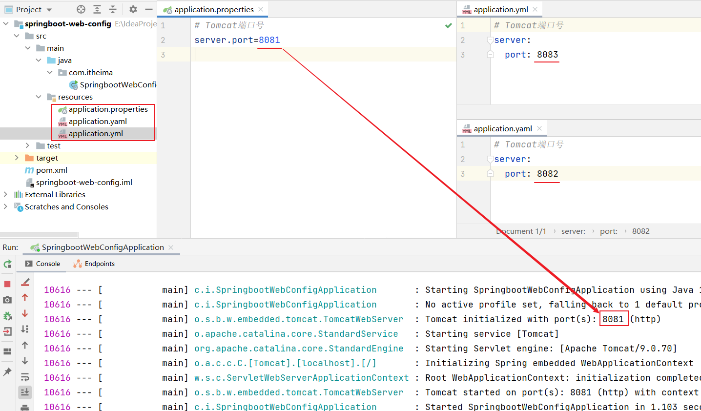
properties、yaml、yml三种配置文件，优先级最高的是properties
- yaml、yml两种配置文件同时存在
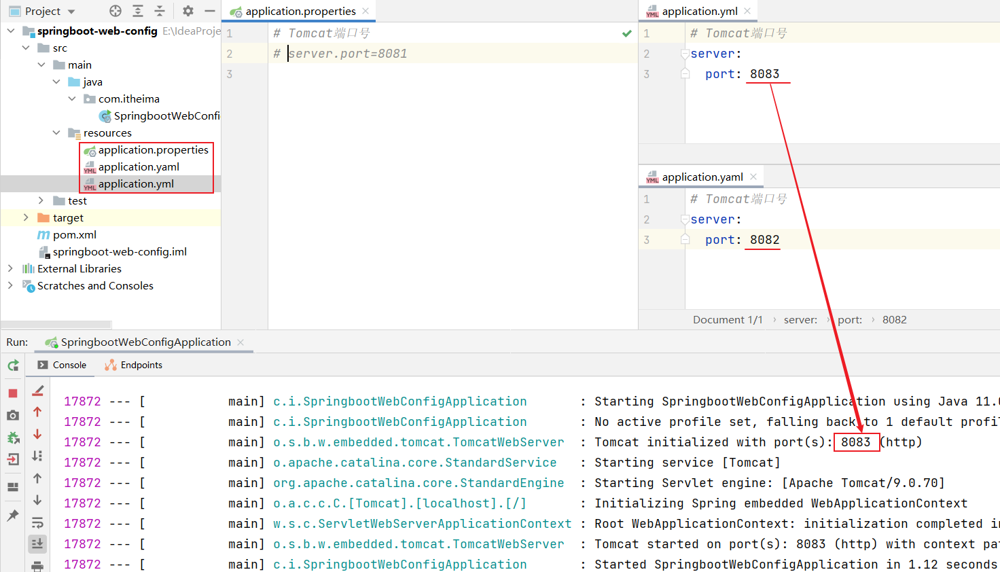
配置文件优先级排名（从高到低）：
- properties配置文件
- yml配置文件
- yaml配置文件
注意事项：虽然springboot支持多种格式配置文件，但是在项目开发时，推荐统一使用一种格式的配置。（yml是主流）
在SpringBoot项目当中除了以上3种配置文件外，SpringBoot为了增强程序的扩展性，除了支持配置文件的配置方式以外，还支持另外两种常见的配置方式：
-
Java系统属性配置 （格式： -Dkey=value）
-Dserver.port=9000 -
命令行参数 （格式：–key=value）
--server.port=10010
那在idea当中运行程序时，如何来指定Java系统属性和命令行参数呢？
- 编辑启动程序的配置信息
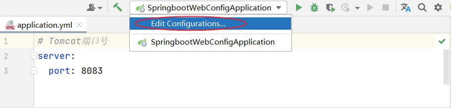
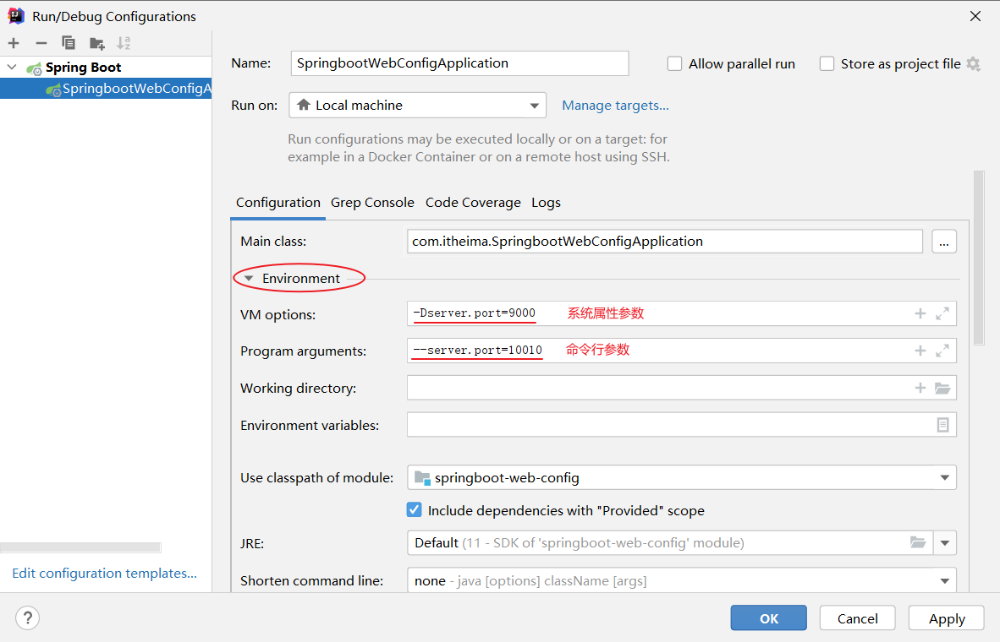
重启服务，同时配置Tomcat端口(三种配置文件、系统属性、命令行参数)，测试哪个Tomcat端口号生效：
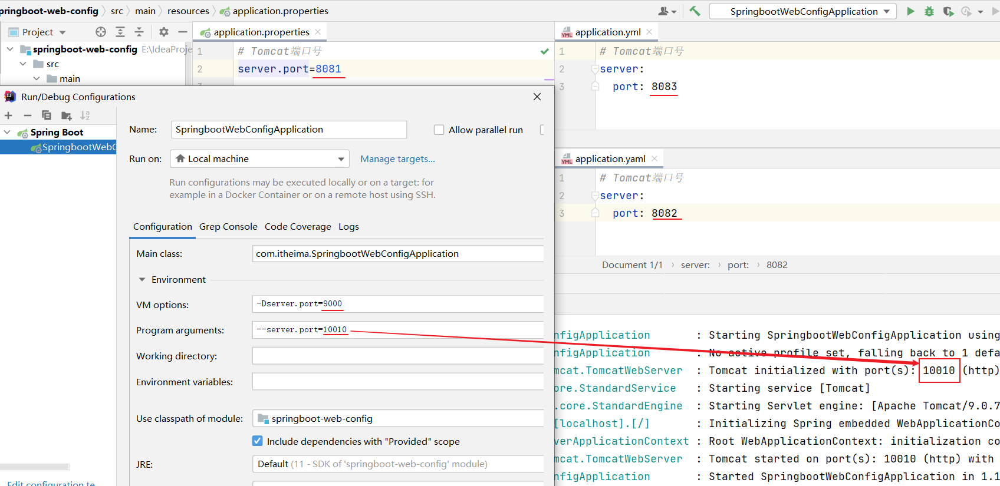
删除命令行参数配置，重启SpringBoot服务：
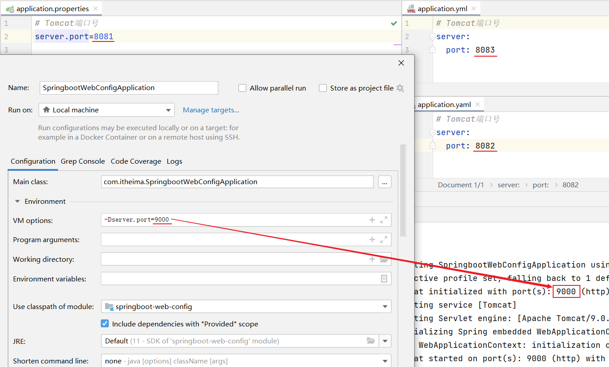
优先级： 命令行参数 > 系统属性参数 > properties参数 > yml参数 > yaml参数
思考：如果项目已经打包上线了，这个时候我们又如何来设置Java系统属性和命令行参数呢？
java -Dserver.port=9000 -jar XXXXX.jar --server.port=10010
下面我们来演示下打包程序运行时指定Java系统属性和命令行参数：
- 执行maven打包指令package，把项目打成jar文件
- 使用命令：java -jar 方式运行jar文件程序
项目打包：
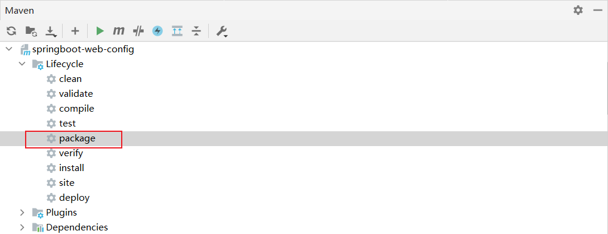
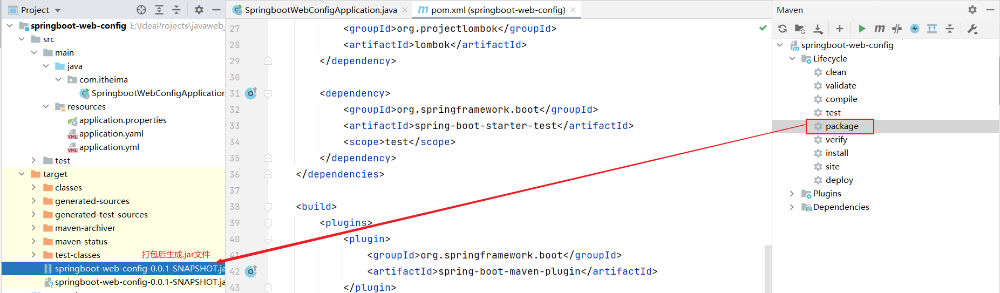
运行jar程序：
- 同时设置Java系统属性和命令行参数
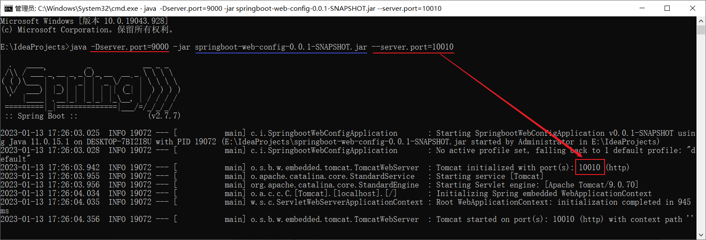
- 仅设置Java系统属性
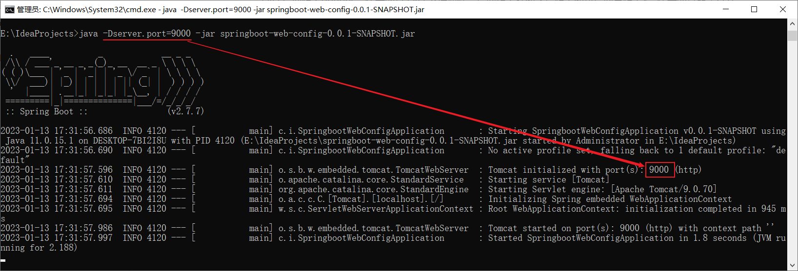
注意事项：
- Springboot项目进行打包时，需要引入插件 spring-boot-maven-plugin (基于官网骨架创建项目，会自动添加该插件)
在SpringBoot项目当中，常见的属性配置方式有5种， 3种配置文件，加上2种外部属性的配置(Java系统属性、命令行参数)。通过以上的测试，我们也得出了优先级(从低到高)：
- application.yaml（忽略）
- application.yml
- application.properties
- java系统属性（-Dxxx=xxx）
- 命令行参数（–xxx=xxx）
2. Bean管理
在前面的课程当中，我们已经讲过了我们可以通过Spring当中提供的注解@Component以及它的三个衍生注解（@Controller、@Service、@Repository）来声明IOC容器中的bean对象，同时我们也学习了如何为应用程序注入运行时所需要依赖的bean对象，也就是依赖注入DI。
我们今天主要学习IOC容器中Bean的其他使用细节，主要学习以下三方面：
- 如何从IOC容器中手动的获取到bean对象
- bean的作用域配置
- 管理第三方的bean对象
接下来我们先来学习第一方面，从IOC容器中获取bean对象。
2.1 获取Bean
默认情况下，SpringBoot项目在启动的时候会自动的创建IOC容器(也称为Spring容器)，并且在启动的过程当中会自动的将bean对象都创建好，存放在IOC容器当中。应用程序在运行时需要依赖什么bean对象，就直接进行依赖注入就可以了。
而在Spring容器中提供了一些方法，可以主动从IOC容器中获取到bean对象，下面介绍3种常用方式：
-
根据name获取bean
Object getBean(String name) -
根据类型获取bean
<T> T getBean(Class<T> requiredType) -
根据name获取bean（带类型转换）
<T> T getBean(String name, Class<T> requiredType)
思考：要从IOC容器当中来获取到bean对象，需要先拿到IOC容器对象，怎么样才能拿到IOC容器呢？
- 想获取到IOC容器，直接将IOC容器对象注入进来就可以了
控制器：DeptController
@RestController
@RequestMapping("/depts")
public class DeptController {
@Autowired
private DeptService deptService;
public DeptController(){
System.out.println("DeptController constructor ....");
}
@GetMapping
public Result list(){
List<Dept> deptList = deptService.list();
return Result.success(deptList);
}
@DeleteMapping("/{id}")
public Result delete(@PathVariable Integer id) {
deptService.delete(id);
return Result.success();
}
@PostMapping
public Result save(@RequestBody Dept dept){
deptService.save(dept);
return Result.success();
}
}
业务实现类：DeptServiceImpl
@Slf4j
@Service
public class DeptServiceImpl implements DeptService {
@Autowired
private DeptMapper deptMapper;
@Override
public List<Dept> list() {
List<Dept> deptList = deptMapper.list();
return deptList;
}
@Override
public void delete(Integer id) {
deptMapper.delete(id);
}
@Override
public void save(Dept dept) {
dept.setCreateTime(LocalDateTime.now());
dept.setUpdateTime(LocalDateTime.now());
deptMapper.save(dept);
}
}
Mapper接口：
@Mapper
public interface DeptMapper {
//查询全部部门数据
@Select("select * from dept")
List<Dept> list();
//删除部门
@Delete("delete from dept where id = #{id}")
void delete(Integer id);
//新增部门
@Insert("insert into dept(name, create_time, update_time) values (#{name},#{createTime},#{updateTime})")
void save(Dept dept);
}
测试类：
@SpringBootTest
class SpringbootWebConfig2ApplicationTests {
@Autowired
private ApplicationContext applicationContext; //IOC容器对象
//获取bean对象
@Test
public void testGetBean(){
//根据bean的名称获取
DeptController bean1 = (DeptController) applicationContext.getBean("deptController");
System.out.println(bean1);
//根据bean的类型获取
DeptController bean2 = applicationContext.getBean(DeptController.class);
System.out.println(bean2);
//根据bean的名称 及 类型获取
DeptController bean3 = applicationContext.getBean("deptController", DeptController.class);
System.out.println(bean3);
}
}
程序运行后控制台日志：
问题：输出的bean对象地址值是一样的，说明IOC容器当中的bean对象有几个？
答案：只有一个。 （默认情况下，IOC中的bean对象是单例）
那么能不能将bean对象设置为非单例的(每次获取的bean都是一个新对象)？
可以，在下一个知识点(bean作用域)中讲解。
注意事项：
- 上述所说的 【Spring项目启动时，会把其中的bean都创建好】还会受到作用域及延迟初始化影响，这里主要针对于默认的单例非延迟加载的bean而言。
2.2 Bean作用域
在前面我们提到的IOC容器当中，默认bean对象是单例模式(只有一个实例对象)。那么如何设置bean对象为非单例呢？需要设置bean的作用域。
在Spring中支持五种作用域，后三种在web环境才生效：
| 作用域 | 说明 |
|---|---|
| singleton | 容器内同名称的bean只有一个实例（单例）（默认） |
| prototype | 每次使用该bean时会创建新的实例（非单例） |
| request | 每个请求范围内会创建新的实例（web环境中，了解） |
| session | 每个会话范围内会创建新的实例（web环境中，了解） |
| application | 每个应用范围内会创建新的实例（web环境中，了解） |
知道了bean的5种作用域了，我们要怎么去设置一个bean的作用域呢？
- 可以借助Spring中的@Scope注解来进行配置作用域
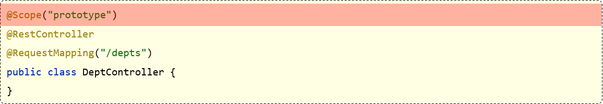
1). 测试一
- 控制器
//默认bean的作用域为：singleton (单例)
@Lazy //延迟加载（第一次使用bean对象时，才会创建bean对象并交给ioc容器管理）
@RestController
@RequestMapping("/depts")
public class DeptController {
@Autowired
private DeptService deptService;
public DeptController(){
System.out.println("DeptController constructor ....");
}
//省略其他代码...
}
- 测试类
@SpringBootTest
class SpringbootWebConfig2ApplicationTests {
@Autowired
private ApplicationContext applicationContext; //IOC容器对象
//bean的作用域
@Test
public void testScope(){
for (int i = 0; i < 10; i++) {
DeptController deptController = applicationContext.getBean(DeptController.class);
System.out.println(deptController);
}
}
}
重启SpringBoot服务，运行测试方法，查看控制台打印的日志：
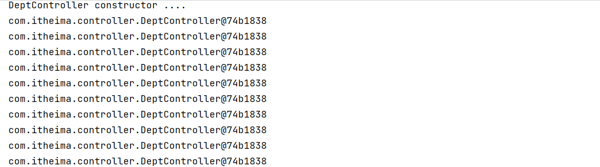
注意事项：
IOC容器中的bean默认使用的作用域：singleton (单例)
默认singleton的bean，在容器启动时被创建，可以使用@Lazy注解来延迟初始化(延迟到第一次使用时)
2). 测试二
修改控制器DeptController代码：
@Scope("prototype") //bean作用域为非单例
@Lazy //延迟加载
@RestController
@RequestMapping("/depts")
public class DeptController {
@Autowired
private DeptService deptService;
public DeptController(){
System.out.println("DeptController constructor ....");
}
//省略其他代码...
}
重启SpringBoot服务，再次执行测试方法，查看控制吧打印的日志：
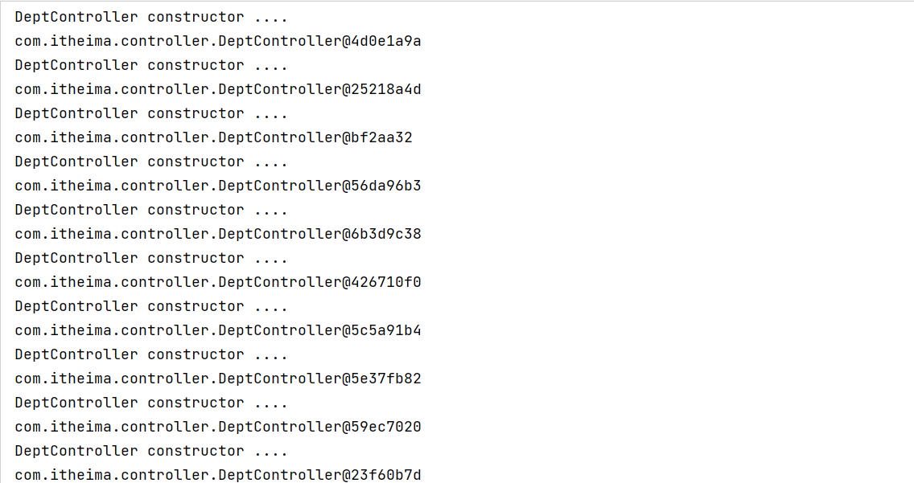
注意事项：
- prototype的bean，每一次使用该bean的时候都会创建一个新的实例
- 实际开发当中，绝大部分的Bean是单例的，也就是说绝大部分Bean不需要配置scope属性
2.3 第三方Bean
学习完bean的获取、bean的作用域之后，接下来我们再来学习第三方bean的配置。
之前我们所配置的bean，像controller、service，dao三层体系下编写的类，这些类都是我们在项目当中自己定义的类(自定义类)。当我们要声明这些bean，也非常简单，我们只需要在类上加上@Component以及它的这三个衍生注解（@Controller、@Service、@Repository），就可以来声明这个bean对象了。 但是在我们项目开发当中，还有一种情况就是这个类它不是我们自己编写的，而是我们引入的第三方依赖当中提供的。
在pom.xml文件中，引入dom4j：
<!--Dom4j-->
<dependency>
<groupId>org.dom4j</groupId>
<artifactId>dom4j</artifactId>
<version>2.1.3</version>
</dependency>
dom4j就是第三方组织提供的。 dom4j中的SAXReader类就是第三方编写的。
当我们需要使用到SAXReader对象时，直接进行依赖注入是不是就可以了呢？
- 按照我们之前的做法，需要在SAXReader类上添加一个注解@Component（将当前类交给IOC容器管理）
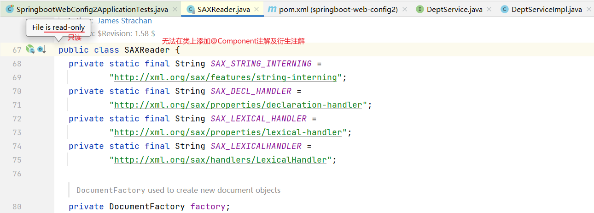
结论：第三方提供的类是只读的。无法在第三方类上添加@Component注解或衍生注解。
那么我们应该怎样使用并定义第三方的bean呢？
- 如果要管理的bean对象来自于第三方（不是自定义的），是无法用@Component 及衍生注解声明bean的，就需要用到**@Bean**注解。
解决方案1：在启动类上添加@Bean标识的方法
@SpringBootApplication
public class SpringbootWebConfig2Application {
public static void main(String[] args) {
SpringApplication.run(SpringbootWebConfig2Application.class, args);
}
//声明第三方bean
@Bean //将当前方法的返回值对象交给IOC容器管理, 成为IOC容器bean
public SAXReader saxReader(){
return new SAXReader();
}
}
xml文件：
<?xml version="1.0" encoding="UTF-8"?>
<emp>
<name>Tom</name>
<age>18</age>
</emp>
测试类：
@SpringBootTest
class SpringbootWebConfig2ApplicationTests {
@Autowired
private SAXReader saxReader;
//第三方bean的管理
@Test
public void testThirdBean() throws Exception {
Document document = saxReader.read(this.getClass().getClassLoader().getResource("1.xml"));
Element rootElement = document.getRootElement();
String name = rootElement.element("name").getText();
String age = rootElement.element("age").getText();
System.out.println(name + " : " + age);
}
//省略其他代码...
}
重启SpringBoot服务，执行测试方法后，控制台输出日志：
Tom : 18
说明：以上在启动类中声明第三方Bean的作法，不建议使用（项目中要保证启动类的纯粹性）
解决方案2：在配置类中定义@Bean标识的方法
- 如果需要定义第三方Bean时， 通常会单独定义一个配置类
@Configuration //配置类 (在配置类当中对第三方bean进行集中的配置管理)
public class CommonConfig {
//声明第三方bean
@Bean //将当前方法的返回值对象交给IOC容器管理, 成为IOC容器bean
//通过@Bean注解的name/value属性指定bean名称, 如果未指定, 默认是方法名
public SAXReader reader(DeptService deptService){
System.out.println(deptService);
return new SAXReader();
}
}
注释掉SpringBoot启动类中创建第三方bean对象的代码，重启服务，执行测试方法，查看控制台日志：
Tom : 18
在方法上加上一个@Bean注解，Spring 容器在启动的时候，它会自动的调用这个方法，并将方法的返回值声明为Spring容器当中的Bean对象。
注意事项 ：
通过@Bean注解的name或value属性可以声明bean的名称，如果不指定，默认bean的名称就是方法名。
如果第三方bean需要依赖其它bean对象，直接在bean定义方法中设置形参即可，容器会根据类型自动装配。
关于Bean大家只需要保持一个原则：
- 如果是在项目当中我们自己定义的类，想将这些类交给IOC容器管理，我们直接使用@Component以及它的衍生注解来声明就可以。
- 如果这个类它不是我们自己定义的，而是引入的第三方依赖当中提供的类，而且我们还想将这个类交给IOC容器管理。此时我们就需要在配置类中定义一个方法，在方法上加上一个@Bean注解，通过这种方式来声明第三方的bean对象。
3. SpringBoot原理
经过前面10多天课程的学习，大家也会发现基于SpringBoot进行web程序的开发是非常简单、非常高效的。
SpringBoot使我们能够集中精力地去关注业务功能的开发，而不用过多地关注框架本身的配置使用。而我们前面所讲解的都是面向应用层面的技术，接下来我们开始学习SpringBoot的原理，这部分内容偏向于底层的原理分析。
在剖析SpringBoot的原理之前，我们先来快速回顾一下我们前面所讲解的Spring家族的框架。
Spring是目前世界上最流行的Java框架，它可以帮助我们更加快速、更加容易的来构建Java项目。而在Spring家族当中提供了很多优秀的框架，而所有的框架都是基于一个基础框架的SpringFramework(也就是Spring框架)。而前面我们也提到，如果我们直接基于Spring框架进行项目的开发，会比较繁琐。
这个繁琐主要体现在两个地方：
- 在pom.xml中依赖配置比较繁琐，在项目开发时，需要自己去找到对应的依赖，还需要找到依赖它所配套的依赖以及对应版本，否则就会出现版本冲突问题。
- 在使用Spring框架进行项目开发时，需要在Spring的配置文件中做大量的配置，这就造成Spring框架入门难度较大，学习成本较高。
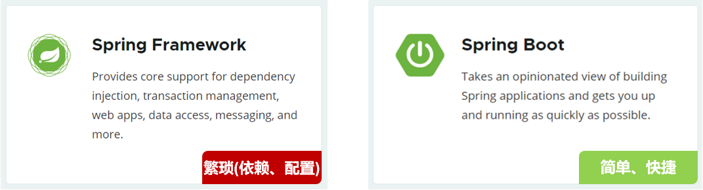
基于Spring存在的问题，官方在Spring框架4.0版本之后，又推出了一个全新的框架：SpringBoot。
通过 SpringBoot来简化Spring框架的开发(是简化不是替代)。我们直接基于SpringBoot来构建Java项目，会让我们的项目开发更加简单，更加快捷。
SpringBoot框架之所以使用起来更简单更快捷，是因为SpringBoot框架底层提供了两个非常重要的功能：一个是起步依赖，一个是自动配置。
通过SpringBoot所提供的起步依赖，就可以大大的简化pom文件当中依赖的配置，从而解决了Spring框架当中依赖配置繁琐的问题。
通过自动配置的功能就可以大大的简化框架在使用时bean的声明以及bean的配置。我们只需要引入程序开发时所需要的起步依赖，项目开发时所用到常见的配置都已经有了，我们直接使用就可以了。
简单回顾之后，接下来我们来学习下SpringBoot的原理。其实学习SpringBoot的原理就是来解析SpringBoot当中的起步依赖与自动配置的原理。我们首先来学习SpringBoot当中起步依赖的原理。
3.1 起步依赖
假如我们没有使用SpringBoot，用的是Spring框架进行web程序的开发，此时我们就需要引入web程序开发所需要的一些依赖。
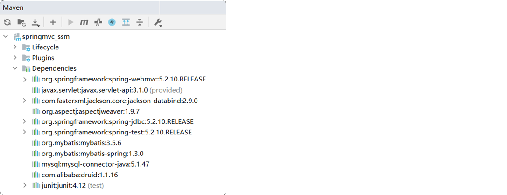
spring-webmvc依赖：这是Spring框架进行web程序开发所需要的依赖
servlet-api依赖：Servlet基础依赖
jackson-databind依赖：JSON处理工具包
如果要使用AOP，还需要引入aop依赖、aspect依赖
项目中所引入的这些依赖，还需要保证版本匹配，否则就可能会出现版本冲突问题。
如果我们使用了SpringBoot，就不需要像上面这么繁琐的引入依赖了。我们只需要引入一个依赖就可以了，那就是web开发的起步依赖：springboot-starter-web。
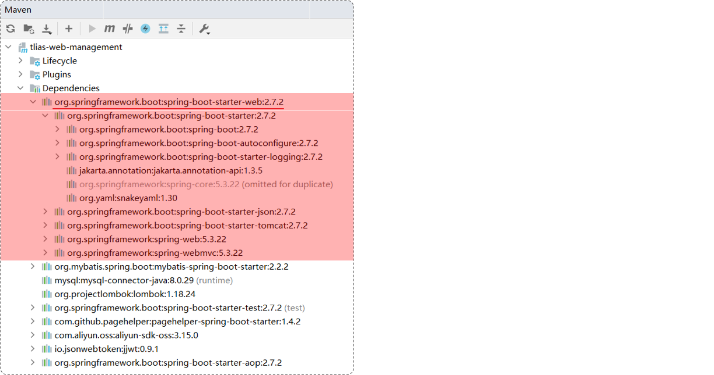
为什么我们只需要引入一个web开发的起步依赖，web开发所需要的所有的依赖都有了呢？
- 因为Maven的依赖传递。
在SpringBoot给我们提供的这些起步依赖当中，已提供了当前程序开发所需要的所有的常见依赖(官网地址：https://docs.spring.io/spring-boot/docs/2.7.7/reference/htmlsingle/#using.build-systems.starters)。
比如：springboot-starter-web，这是web开发的起步依赖，在web开发的起步依赖当中，就集成了web开发中常见的依赖：json、web、webmvc、tomcat等。我们只需要引入这一个起步依赖，其他的依赖都会自动的通过Maven的依赖传递进来。
结论：起步依赖的原理就是Maven的依赖传递。
3.2 自动配置
我们讲解了SpringBoot当中起步依赖的原理，就是Maven的依赖传递。接下来我们解析下自动配置的原理，我们要分析自动配置的原理，首先要知道什么是自动配置。
3.2.1 概述
SpringBoot的自动配置就是当Spring容器启动后，一些配置类、bean对象就自动存入到了IOC容器中，不需要我们手动去声明，从而简化了开发，省去了繁琐的配置操作。
比如：我们要进行事务管理、要进行AOP程序的开发，此时就不需要我们再去手动的声明这些bean对象了，我们直接使用就可以从而大大的简化程序的开发，省去了繁琐的配置操作。
下面我们打开idea，一起来看下自动配置的效果：
- 运行SpringBoot启动类
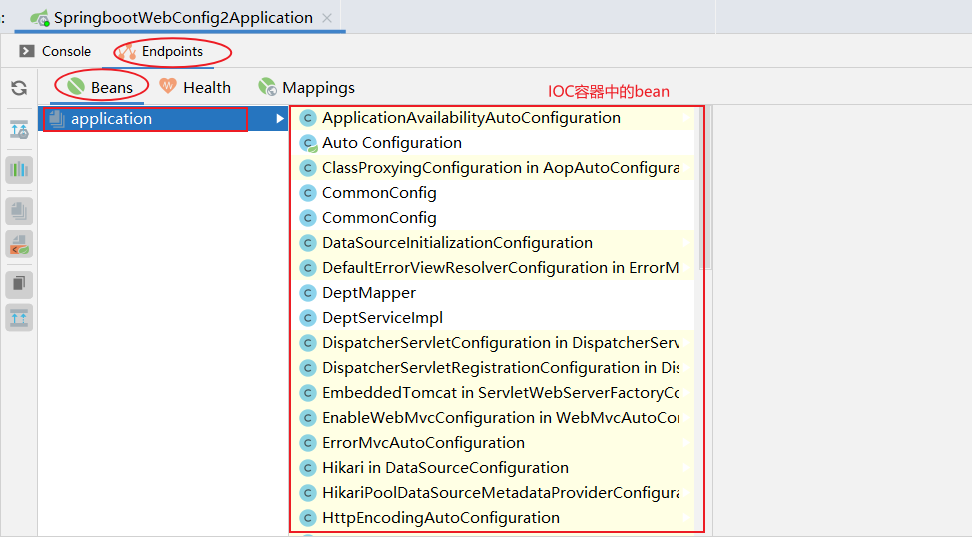
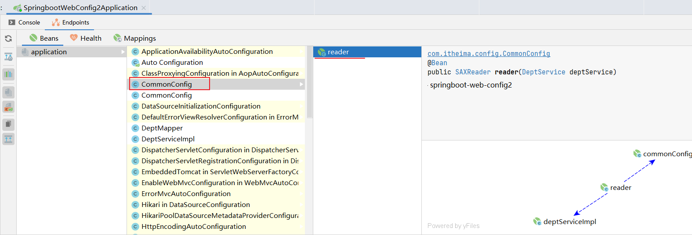
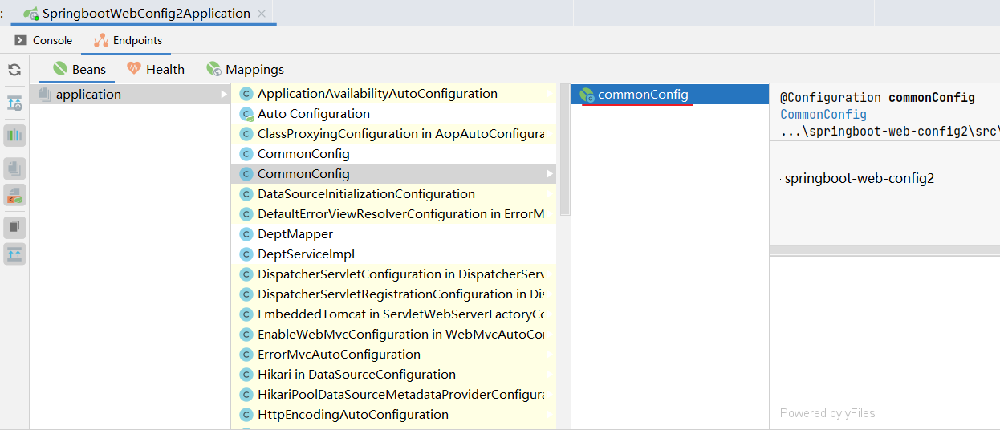
大家会看到有两个CommonConfig，在第一个CommonConfig类中定义了一个bean对象，bean对象的名字叫reader。
在第二个CommonConfig中它的bean名字叫commonConfig，为什么还会有这样一个bean对象呢？原因是在CommonConfig配置类上添加了一个注解@Configuration，而@Configuration底层就是@Component
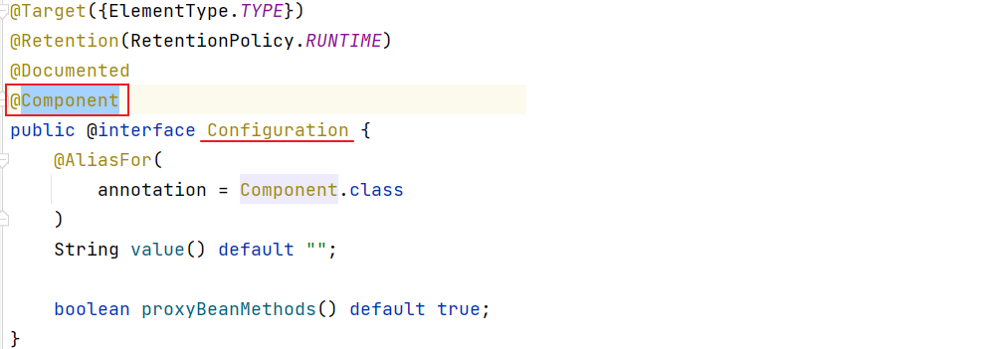
所以配置类最终也是SpringIOC容器当中的一个bean对象
在IOC容器中除了我们自己定义的bean以外，还有很多配置类，这些配置类都是SpringBoot在启动的时候加载进来的配置类。这些配置类加载进来之后，它也会生成很多的bean对象。
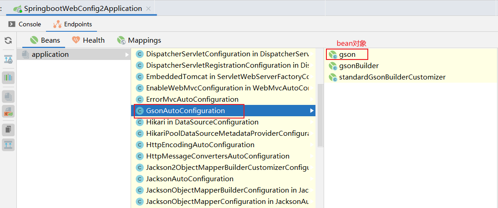
比如：配置类GsonAutoConfiguration里面有一个bean，bean的名字叫gson，它的类型是Gson。
com.google.gson.Gson是谷歌包中提供的用来处理JSON格式数据的。
当我们想要使用这些配置类中生成的bean对象时，可以使用@Autowired就自动注入了：
import com.google.gson.Gson;
import com.itheima.pojo.Result;
import org.junit.jupiter.api.Test;
import org.springframework.beans.factory.annotation.Autowired;
import org.springframework.boot.test.context.SpringBootTest;
@SpringBootTest
public class AutoConfigurationTests {
@Autowired
private Gson gson;
@Test
public void testJson(){
String json = gson.toJson(Result.success());
System.out.println(json);
}
}
添加断点，使用debug模式运行测试类程序：
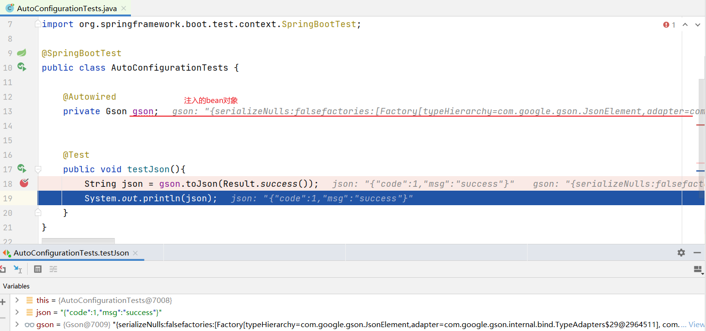
问题：在当前项目中我们并没有声明谷歌提供的Gson这么一个bean对象，然后我们却可以通过@Autowired从Spring容器中注入bean对象，那么这个bean对象怎么来的？
答案：SpringBoot项目在启动时通过自动配置完成了bean对象的创建。
体验了SpringBoot的自动配置了，下面我们就来分析自动配置的原理。其实分析自动配置原理就是来解析在SpringBoot项目中，在引入依赖之后是如何将依赖jar包当中所定义的配置类以及bean加载到SpringIOC容器中的。
3.2.2 常见方案
3.2.2.1 概述
我们知道了什么是自动配置之后，接下来我们就要来剖析自动配置的原理。解析自动配置的原理就是分析在 SpringBoot项目当中，我们引入对应的依赖之后，是如何将依赖jar包当中所提供的bean以及配置类直接加载到当前项目的SpringIOC容器当中的。
接下来，我们就直接通过代码来分析自动配置原理。
准备工作：在Idea中导入"资料\03. 自动配置原理"下的itheima-utils工程
1、在SpringBoot项目 spring-boot-web-config2 工程中，通过坐标引入itheima-utils依赖
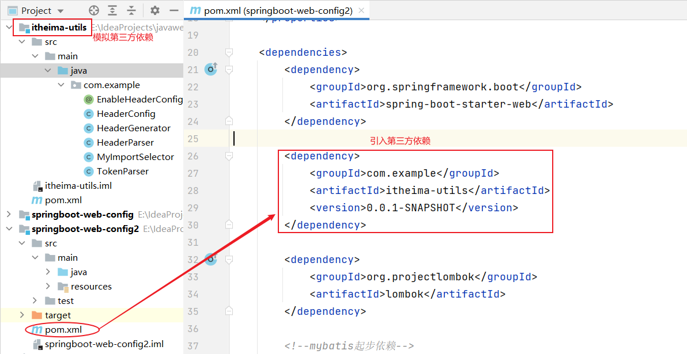
@Component
public class TokenParser {
public void parse(){
System.out.println("TokenParser ... parse ...");
}
}
2、在测试类中，添加测试方法
@SpringBootTest
public class AutoConfigurationTests {
@Autowired
private ApplicationContext applicationContext;
@Test
public void testTokenParse(){
System.out.println(applicationContext.getBean(TokenParser.class));
}
//省略其他代码...
}
3、执行测试方法
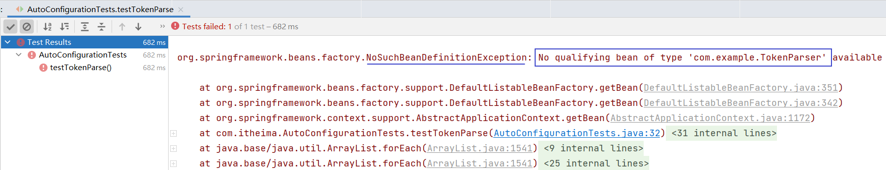
异常信息描述： 没有com.example.TokenParse类型的bean
说明：在Spring容器中没有找到com.example.TokenParse类型的bean对象
思考：引入进来的第三方依赖当中的bean以及配置类为什么没有生效？
- 原因在我们之前讲解IOC的时候有提到过，在类上添加@Component注解来声明bean对象时，还需要保证@Component注解能被Spring的组件扫描到。
- SpringBoot项目中的@SpringBootApplication注解，具有包扫描的作用，但是它只会扫描启动类所在的当前包以及子包。
- 当前包：com.itheima， 第三方依赖中提供的包：com.example（扫描不到）
那么如何解决以上问题的呢？
- 方案1：@ComponentScan 组件扫描
- 方案2：@Import 导入（使用@Import导入的类会被Spring加载到IOC容器中）
3.2.2.2 方案一
@ComponentScan组件扫描
@SpringBootApplication
@ComponentScan({"com.itheima","com.example"}) //指定要扫描的包
public class SpringbootWebConfig2Application {
public static void main(String[] args) {
SpringApplication.run(SpringbootWebConfig2Application.class, args);
}
}
重新执行测试方法，控制台日志输出：
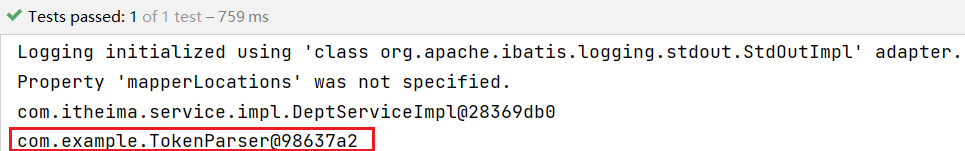
大家可以想象一下，如果采用以上这种方式来完成自动配置，那我们进行项目开发时，当需要引入大量的第三方的依赖，就需要在启动类上配置N多要扫描的包，这种方式会很繁琐。而且这种大面积的扫描性能也比较低。
缺点：
- 使用繁琐
- 性能低
结论：SpringBoot中并没有采用以上这种方案。
3.2.2.3 方案二
@Import导入
- 导入形式主要有以下几种：
- 导入普通类
- 导入配置类
- 导入ImportSelector接口实现类
1). 使用@Import导入普通类：
@Import(TokenParser.class) //导入的类会被Spring加载到IOC容器中
@SpringBootApplication
public class SpringbootWebConfig2Application {
public static void main(String[] args) {
SpringApplication.run(SpringbootWebConfig2Application.class, args);
}
}
重新执行测试方法，控制台日志输出：
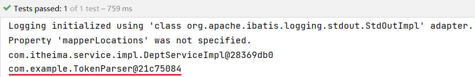
2). 使用@Import导入配置类：
- 配置类
@Configuration
public class HeaderConfig {
@Bean
public HeaderParser headerParser(){
return new HeaderParser();
}
@Bean
public HeaderGenerator headerGenerator(){
return new HeaderGenerator();
}
}
- 启动类
@Import(HeaderConfig.class) //导入配置类
@SpringBootApplication
public class SpringbootWebConfig2Application {
public static void main(String[] args) {
SpringApplication.run(SpringbootWebConfig2Application.class, args);
}
}
- 测试类
@SpringBootTest
public class AutoConfigurationTests {
@Autowired
private ApplicationContext applicationContext;
@Test
public void testHeaderParser(){
System.out.println(applicationContext.getBean(HeaderParser.class));
}
@Test
public void testHeaderGenerator(){
System.out.println(applicationContext.getBean(HeaderGenerator.class));
}
//省略其他代码...
}
执行测试方法：
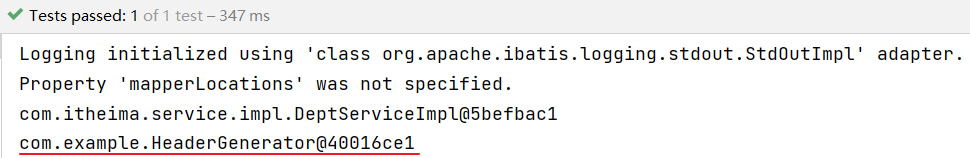
3). 使用@Import导入ImportSelector接口实现类：
- ImportSelector接口实现类
public class MyImportSelector implements ImportSelector {
public String[] selectImports(AnnotationMetadata importingClassMetadata) {
//返回值字符串数组（数组中封装了全限定名称的类）
return new String[]{"com.example.HeaderConfig"};
}
}
- 启动类
@Import(MyImportSelector.class) //导入ImportSelector接口实现类
@SpringBootApplication
public class SpringbootWebConfig2Application {
public static void main(String[] args) {
SpringApplication.run(SpringbootWebConfig2Application.class, args);
}
}
执行测试方法：
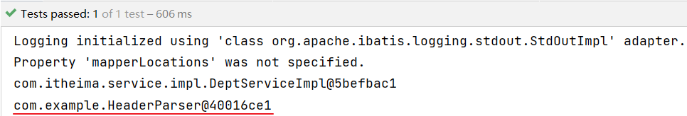
我们使用@Import注解通过这三种方式都可以导入第三方依赖中所提供的bean或者是配置类。
思考：如果基于以上方式完成自动配置，当要引入一个第三方依赖时，是不是还要知道第三方依赖中有哪些配置类和哪些Bean对象？
- 答案：是的。 （对程序员来讲，很不友好，而且比较繁琐）
思考：当我们要使用第三方依赖，依赖中到底有哪些bean和配置类，谁最清楚？
- 答案：第三方依赖自身最清楚。
结论：我们不用自己指定要导入哪些bean对象和配置类了，让第三方依赖它自己来指定。
怎么让第三方依赖自己指定bean对象和配置类？
- 比较常见的方案就是第三方依赖给我们提供一个注解，这个注解一般都以@EnableXxxx开头的注解，注解中封装的就是@Import注解
4). 使用第三方依赖提供的 @EnableXxxxx注解
- 第三方依赖中提供的注解
@Retention(RetentionPolicy.RUNTIME)
@Target(ElementType.TYPE)
@Import(MyImportSelector.class)//指定要导入哪些bean对象或配置类
public @interface EnableHeaderConfig {
}
- 在使用时只需在启动类上加上@EnableXxxxx注解即可
@EnableHeaderConfig //使用第三方依赖提供的Enable开头的注解
@SpringBootApplication
public class SpringbootWebConfig2Application {
public static void main(String[] args) {
SpringApplication.run(SpringbootWebConfig2Application.class, args);
}
}
执行测试方法：
以上四种方式都可以完成导入操作，但是第4种方式会更方便更优雅，而这种方式也是SpringBoot当中所采用的方式。
3.2.3 原理分析
3.2.3.1 源码跟踪
前面我们讲解了在项目当中引入第三方依赖之后，如何加载第三方依赖中定义好的bean对象以及配置类，从而完成自动配置操作。那下面我们通过源码跟踪的形式来剖析下SpringBoot底层到底是如何完成自动配置的。
源码跟踪技巧：
在跟踪框架源码的时候，一定要抓住关键点，找到核心流程。一定不要从头到尾一行代码去看，一个方法的去研究，一定要找到关键流程，抓住关键点，先在宏观上对整个流程或者整个原理有一个认识，有精力再去研究其中的细节。
要搞清楚SpringBoot的自动配置原理，要从SpringBoot启动类上使用的核心注解@SpringBootApplication开始分析：
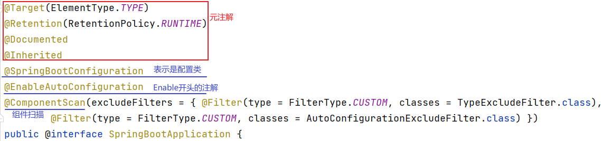
在@SpringBootApplication注解中包含了：
- 元注解（不再解释）
- @SpringBootConfiguration
- @EnableAutoConfiguration
- @ComponentScan
我们先来看第一个注解：@SpringBootConfiguration
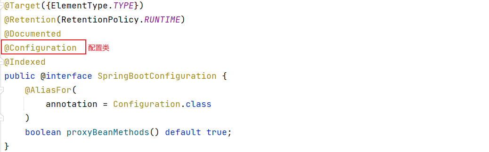
@SpringBootConfiguration注解上使用了@Configuration，表明SpringBoot启动类就是一个配置类。
@Indexed注解，是用来加速应用启动的（不用关心）。
接下来再先看@ComponentScan注解：
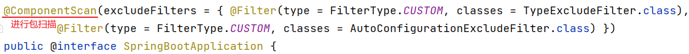
@ComponentScan注解是用来进行组件扫描的，扫描启动类所在的包及其子包下所有被@Component及其衍生注解声明的类。
SpringBoot启动类，之所以具备扫描包功能，就是因为包含了@ComponentScan注解。
最后我们来看看@EnableAutoConfiguration注解（自动配置核心注解）：
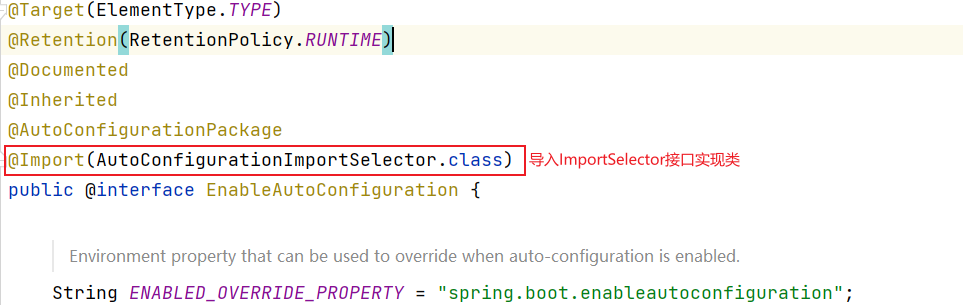
使用@Import注解，导入了实现ImportSelector接口的实现类。
AutoConfigurationImportSelector类是ImportSelector接口的实现类。
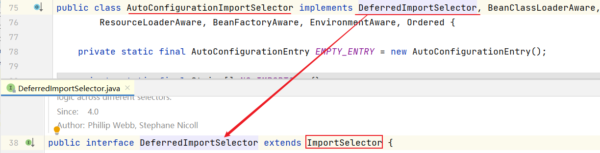
AutoConfigurationImportSelector类中重写了ImportSelector接口的selectImports()方法：
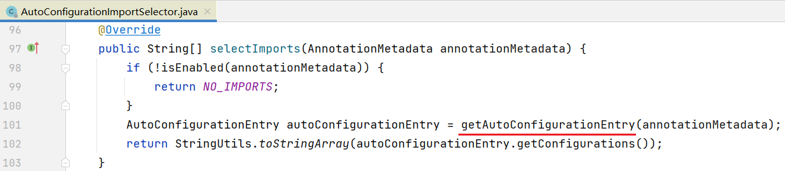
selectImports()方法底层调用getAutoConfigurationEntry()方法，获取可自动配置的配置类信息集合
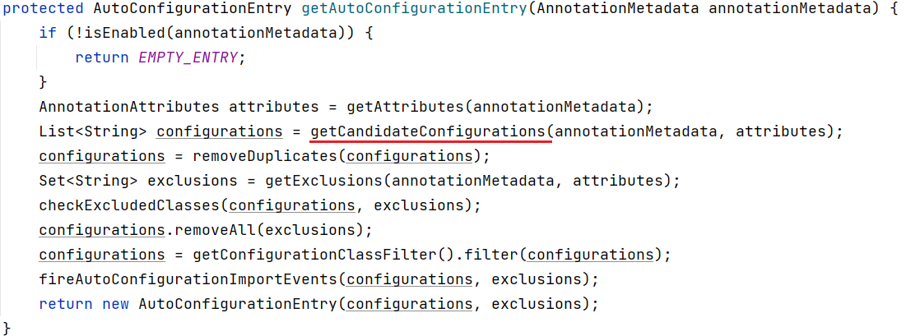
getAutoConfigurationEntry()方法通过调用getCandidateConfigurations(annotationMetadata, attributes)方法获取在配置文件中配置的所有自动配置类的集合
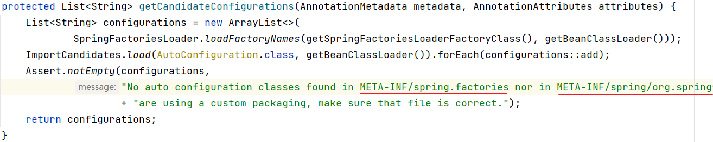
getCandidateConfigurations方法的功能：
获取所有基于META-INF/spring/org.springframework.boot.autoconfigure.AutoConfiguration.imports文件、META-INF/spring.factories文件中配置类的集合
META-INF/spring/org.springframework.boot.autoconfigure.AutoConfiguration.imports文件和META-INF/spring.factories文件这两个文件在哪里呢？
- 通常在引入的起步依赖中，都有包含以上两个文件
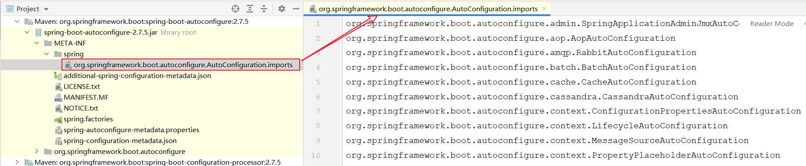
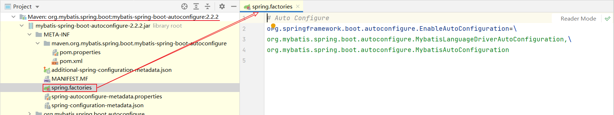
在前面在给大家演示自动配置的时候，我们直接在测试类当中注入了一个叫gson的bean对象，进行JSON格式转换。虽然我们没有配置bean对象，但是我们是可以直接注入使用的。原因就是因为在自动配置类当中做了自动配置。到底是在哪个自动配置类当中做的自动配置呢？我们通过搜索来查询一下。
在META-INF/spring/org.springframework.boot.autoconfigure.AutoConfiguration.imports配置文件中指定了第三方依赖Gson的配置类：GsonAutoConfiguration
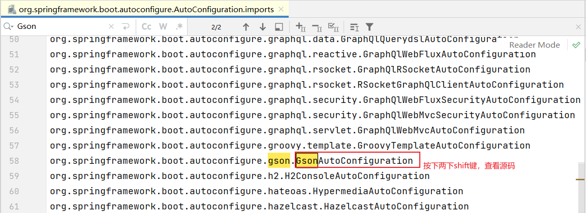
第三方依赖中提供的GsonAutoConfiguration类：
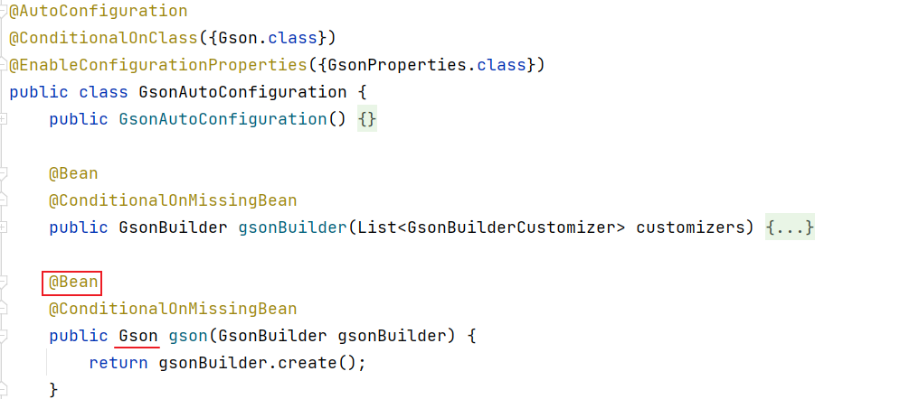
在GsonAutoConfiguration类上，添加了注解@AutoConfiguration，通过查看源码，可以明确：GsonAutoConfiguration类是一个配置。
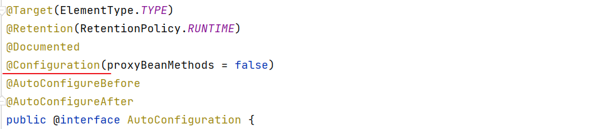
看到这里，大家就应该明白为什么可以完成自动配置了，原理就是在配置类中定义一个@Bean标识的方法，而Spring会自动调用配置类中使用@Bean标识的方法，并把方法的返回值注册到IOC容器中。
自动配置源码小结
自动配置原理源码入口就是@SpringBootApplication注解，在这个注解中封装了3个注解，分别是：
- @SpringBootConfiguration
- 声明当前类是一个配置类
- @ComponentScan
- 进行组件扫描（SpringBoot中默认扫描的是启动类所在的当前包及其子包）
- @EnableAutoConfiguration
- 封装了@Import注解（Import注解中指定了一个ImportSelector接口的实现类）
- 在实现类重写的selectImports()方法，读取当前项目下所有依赖jar包中META-INF/spring.factories、META-INF/spring/org.springframework.boot.autoconfigure.AutoConfiguration.imports两个文件里面定义的配置类（配置类中定义了@Bean注解标识的方法）。
- 封装了@Import注解（Import注解中指定了一个ImportSelector接口的实现类）
当SpringBoot程序启动时，就会加载配置文件当中所定义的配置类，并将这些配置类信息(类的全限定名)封装到String类型的数组中，最终通过@Import注解将这些配置类全部加载到Spring的IOC容器中，交给IOC容器管理。
最后呢给大家抛出一个问题：在META-INF/spring/org.springframework.boot.autoconfigure.AutoConfiguration.imports文件中定义的配置类非常多，而且每个配置类中又可以定义很多的bean，那这些bean都会注册到Spring的IOC容器中吗？
答案：并不是。 在声明bean对象时，上面有加一个以@Conditional开头的注解，这种注解的作用就是按照条件进行装配，只有满足条件之后，才会将bean注册到Spring的IOC容器中（下面会详细来讲解）
3.2.3.2 @Conditional
我们在跟踪SpringBoot自动配置的源码的时候，在自动配置类声明bean的时候，除了在方法上加了一个@Bean注解以外，还会经常用到一个注解，就是以Conditional开头的这一类的注解。以Conditional开头的这些注解都是条件装配的注解。下面我们就来介绍下条件装配注解。
@Conditional注解：
- 作用：按照一定的条件进行判断，在满足给定条件后才会注册对应的bean对象到Spring的IOC容器中。
- 位置：方法、类
- @Conditional本身是一个父注解，派生出大量的子注解：
- @ConditionalOnClass：判断环境中有对应字节码文件，才注册bean到IOC容器。
- @ConditionalOnMissingBean：判断环境中没有对应的bean(类型或名称)，才注册bean到IOC容器。
- @ConditionalOnProperty：判断配置文件中有对应属性和值，才注册bean到IOC容器。
下面我们通过代码来演示下Conditional注解的使用：
- @ConditionalOnClass注解
@Configuration
public class HeaderConfig {
@Bean
@ConditionalOnClass(name="io.jsonwebtoken.Jwts")//环境中存在指定的这个类，才会将该bean加入IOC容器
public HeaderParser headerParser(){
return new HeaderParser();
}
//省略其他代码...
}
- pom.xml
<!--JWT令牌-->
<dependency>
<groupId>io.jsonwebtoken</groupId>
<artifactId>jjwt</artifactId>
<version>0.9.1</version>
</dependency>
- 测试类
@SpringBootTest
public class AutoConfigurationTests {
@Autowired
private ApplicationContext applicationContext;
@Test
public void testHeaderParser(){
System.out.println(applicationContext.getBean(HeaderParser.class));
}
//省略其他代码...
}
执行testHeaderParser()测试方法：
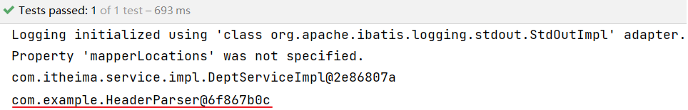
因为io.jsonwebtoken.Jwts字节码文件在启动SpringBoot程序时已存在，所以创建HeaderParser对象并注册到IOC容器中。
- @ConditionalOnMissingBean注解
@Configuration
public class HeaderConfig {
@Bean
@ConditionalOnMissingBean //不存在该类型的bean，才会将该bean加入IOC容器
public HeaderParser headerParser(){
return new HeaderParser();
}
//省略其他代码...
}
执行testHeaderParser()测试方法：
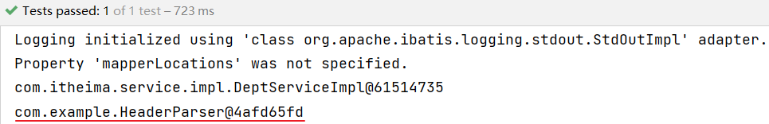
SpringBoot在调用@Bean标识的headerParser()前，IOC容器中是没有HeaderParser类型的bean，所以HeaderParser对象正常创建，并注册到IOC容器中。
再次修改@ConditionalOnMissingBean注解：
@Configuration
public class HeaderConfig {
@Bean
@ConditionalOnMissingBean(name="deptController2")//不存在指定名称的bean，才会将该bean加入IOC容器
public HeaderParser headerParser(){
return new HeaderParser();
}
//省略其他代码...
}
执行testHeaderParser()测试方法：
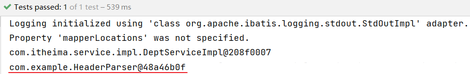
因为在SpringBoot环境中不存在名字叫deptController2的bean对象，所以创建HeaderParser对象并注册到IOC容器中。
再次修改@ConditionalOnMissingBean注解：
@Configuration
public class HeaderConfig {
@Bean
@ConditionalOnMissingBean(HeaderConfig.class)//不存在指定类型的bean，才会将bean加入IOC容器
public HeaderParser headerParser(){
return new HeaderParser();
}
//省略其他代码...
}
@SpringBootTest
public class AutoConfigurationTests {
@Autowired
private ApplicationContext applicationContext;
@Test
public void testHeaderParser(){
System.out.println(applicationContext.getBean(HeaderParser.class));
}
//省略其他代码...
}
执行testHeaderParser()测试方法：
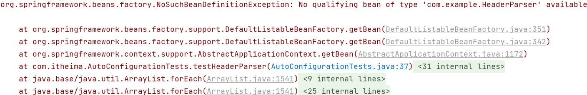
因为HeaderConfig类中添加@Configuration注解，而@Configuration注解中包含了@Component，所以SpringBoot启动时会创建HeaderConfig类对象，并注册到IOC容器中。
当IOC容器中有HeaderConfig类型的bean存在时，不会把创建HeaderParser对象注册到IOC容器中。而IOC容器中没有HeaderParser类型的对象时，通过getBean(HeaderParser.class)方法获取bean对象时，引发异常：NoSuchBeanDefinitionException
- @ConditionalOnProperty注解（这个注解和配置文件当中配置的属性有关系）
先在application.yml配置文件中添加如下的键值对：
name: itheima
在声明bean的时候就可以指定一个条件@ConditionalOnProperty
@Configuration
public class HeaderConfig {
@Bean
@ConditionalOnProperty(name ="name",havingValue = "itheima")//配置文件中存在指定属性名与值，才会将bean加入IOC容器
public HeaderParser headerParser(){
return new HeaderParser();
}
@Bean
public HeaderGenerator headerGenerator(){
return new HeaderGenerator();
}
}
执行testHeaderParser()测试方法：
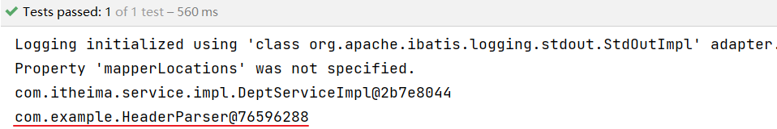
修改@ConditionalOnProperty注解： havingValue的值修改为"itheima2"
@Bean
@ConditionalOnProperty(name ="name",havingValue = "itheima2")//配置文件中存在指定属性名与值，才会将bean加入IOC容器
public HeaderParser headerParser(){
return new HeaderParser();
}
再次执行testHeaderParser()测试方法：
因为application.yml配置文件中，不存在： name: itheima2，所以HeaderParser对象在IOC容器中不存在
我们再回头看看之前讲解SpringBoot源码时提到的一个配置类：GsonAutoConfiguration
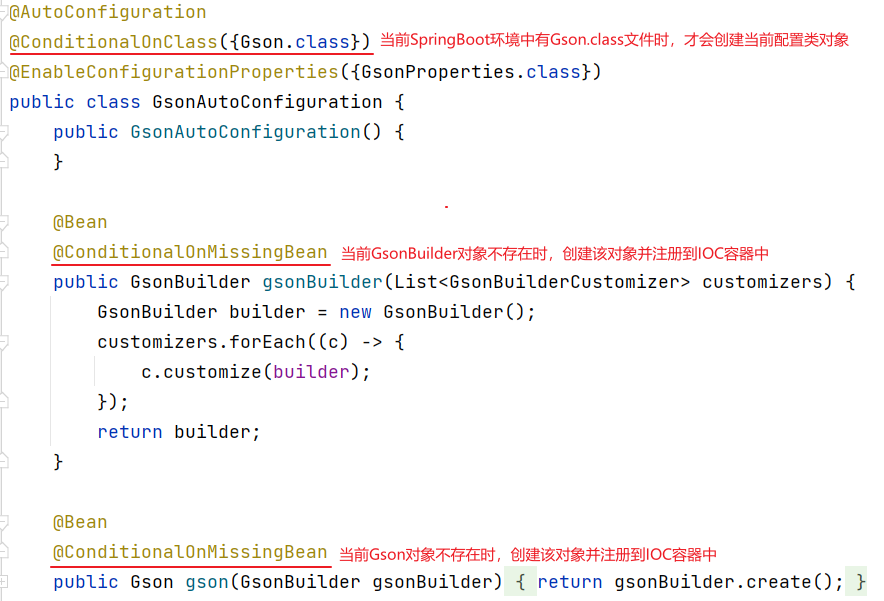
最后再给大家梳理一下自动配置原理：
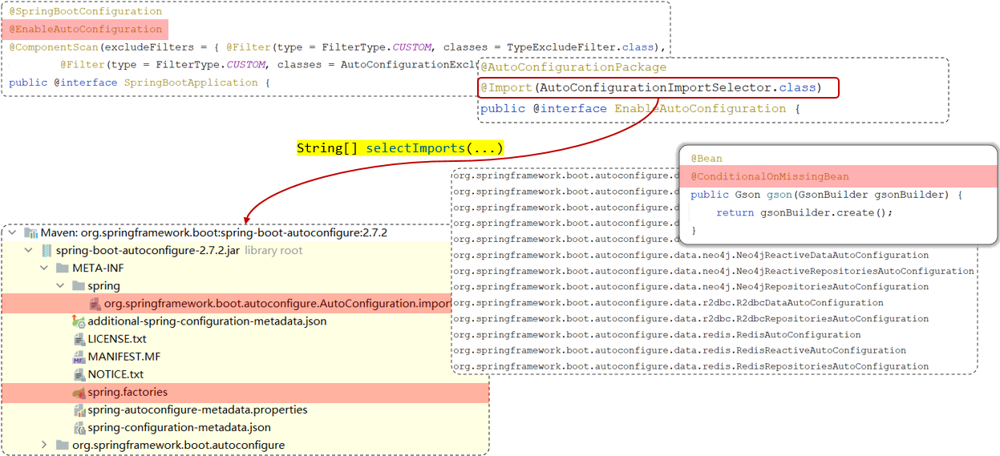
自动配置的核心就在@SpringBootApplication注解上，SpringBootApplication这个注解底层包含了3个注解，分别是：
@SpringBootConfiguration
@ComponentScan
@EnableAutoConfiguration
@EnableAutoConfiguration这个注解才是自动配置的核心。
- 它封装了一个@Import注解，Import注解里面指定了一个ImportSelector接口的实现类。
- 在这个实现类中，重写了ImportSelector接口中的selectImports()方法。
- 而selectImports()方法中会去读取两份配置文件，并将配置文件中定义的配置类做为selectImports()方法的返回值返回，返回值代表的就是需要将哪些类交给Spring的IOC容器进行管理。
- 那么所有自动配置类的中声明的bean都会加载到Spring的IOC容器中吗? 其实并不会，因为这些配置类中在声明bean时，通常都会添加@Conditional开头的注解，这个注解就是进行条件装配。而Spring会根据Conditional注解有选择性的进行bean的创建。
- @Enable 开头的注解底层，它就封装了一个注解 import 注解，它里面指定了一个类，是 ImportSelector 接口的实现类。在实现类当中，我们需要去实现 ImportSelector 接口当中的一个方法 selectImports 这个方法。这个方法的返回值代表的就是我需要将哪些类交给 spring 的 IOC容器进行管理。
- 此时它会去读取两份配置文件，一份儿是 spring.factories，另外一份儿是 autoConfiguration.imports。而在 autoConfiguration.imports 这份儿文件当中，它就会去配置大量的自动配置的类。
- 而前面我们也提到过这些所有的自动配置类当中，所有的 bean都会加载到 spring 的 IOC 容器当中吗？其实并不会，因为这些配置类当中，在声明 bean 的时候，通常会加上这么一类@Conditional 开头的注解。这个注解就是进行条件装配。所以SpringBoot非常的智能，它会根据 @Conditional 注解来进行条件装配。只有条件成立，它才会声明这个bean，才会将这个 bean 交给 IOC 容器管理。
3.2.4 案例
3.2.4.1 自定义starter分析
前面我们解析了SpringBoot中自动配置的原理，下面我们就通过一个自定义starter案例来加深大家对于自动配置原理的理解。首先介绍一下自定义starter的业务场景，再来分析一下具体的操作步骤。
所谓starter指的就是SpringBoot当中的起步依赖。在SpringBoot当中已经给我们提供了很多的起步依赖了，我们为什么还需要自定义 starter 起步依赖？这是因为在实际的项目开发当中，我们可能会用到很多第三方的技术，并不是所有的第三方的技术官方都给我们提供了与SpringBoot整合的starter起步依赖，但是这些技术又非常的通用，在很多项目组当中都在使用。
业务场景：
- 我们前面案例当中所使用的阿里云OSS对象存储服务，现在阿里云的官方是没有给我们提供对应的起步依赖的，这个时候使用起来就会比较繁琐，我们需要引入对应的依赖。我们还需要在配置文件当中进行配置，还需要基于官方SDK示例来改造对应的工具类，我们在项目当中才可以进行使用。
- 大家想在我们当前项目当中使用了阿里云OSS，我们需要进行这么多步的操作。在别的项目组当中要想使用阿里云OSS，是不是也需要进行这么多步的操作，所以这个时候我们就可以自定义一些公共组件，在这些公共组件当中，我就可以提前把需要配置的bean都提前配置好。将来在项目当中，我要想使用这个技术，我直接将组件对应的坐标直接引入进来，就已经自动配置好了，就可以直接使用了。我们也可以把公共组件提供给别的项目组进行使用，这样就可以大大的简化我们的开发。
在SpringBoot项目中，一般都会将这些公共组件封装为SpringBoot当中的starter，也就是我们所说的起步依赖。
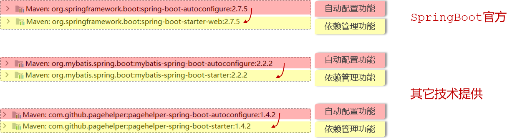
SpringBoot官方starter命名： spring-boot-starter-xxxx
第三组织提供的starter命名： xxxx-spring-boot-starter
Mybatis提供了配置类，并且也提供了springboot会自动读取的配置文件。当SpringBoot项目启动时，会读取到spring.factories配置文件中的配置类并加载配置类，生成相关bean对象注册到IOC容器中。
结果：我们可以直接在SpringBoot程序中使用Mybatis自动配置的bean对象。
在自定义一个起步依赖starter的时候，按照规范需要定义两个模块：
- starter模块（进行依赖管理[把程序开发所需要的依赖都定义在starter起步依赖中]）
- autoconfigure模块（自动配置）
将来在项目当中进行相关功能开发时，只需要引入一个起步依赖就可以了，因为它会将autoconfigure自动配置的依赖给传递下来。
上面我们简单介绍了自定义starter的场景，以及自定义starter时涉及到的模块之后，接下来我们就来完成一个自定义starter的案例。
需求：自定义aliyun-oss-spring-boot-starter，完成阿里云OSS操作工具类AliyunOSSUtils的自动配置。
目标：引入起步依赖引入之后，要想使用阿里云OSS，注入AliyunOSSUtils直接使用即可。
之前阿里云OSS的使用：
- 配置文件
#配置阿里云OSS参数
aliyun:
oss:
endpoint: https://oss-cn-shanghai.aliyuncs.com
accessKeyId: LTAI5t9MZK8iq5T2Av5GLDxX
accessKeySecret: C0IrHzKZGKqU8S7YQcevcotD3Zd5Tc
bucketName: web-framework01
- AliOSSProperties类
@Data
@Component
@ConfigurationProperties(prefix = "aliyun.oss")
public class AliOSSProperties {
//区域
private String endpoint;
//身份ID
private String accessKeyId ;
//身份密钥
private String accessKeySecret ;
//存储空间
private String bucketName;
}
- AliOSSUtils工具类
@Component //当前类对象由Spring创建和管理
public class AliOSSUtils {
@Autowired
private AliOSSProperties aliOSSProperties;
/**
* 实现上传图片到OSS
*/
public String upload(MultipartFile multipartFile) throws IOException {
// 获取上传的文件的输入流
InputStream inputStream = multipartFile.getInputStream();
// 避免文件覆盖
String originalFilename = multipartFile.getOriginalFilename();
String fileName = UUID.randomUUID().toString() + originalFilename.substring(originalFilename.lastIndexOf("."));
//上传文件到 OSS
OSS ossClient = new OSSClientBuilder().build(aliOSSProperties.getEndpoint(),
aliOSSProperties.getAccessKeyId(), aliOSSProperties.getAccessKeySecret());
ossClient.putObject(aliOSSProperties.getBucketName(), fileName, inputStream);
//文件访问路径
String url =aliOSSProperties.getEndpoint().split("//")[0] + "//" + aliOSSProperties.getBucketName() + "." + aliOSSProperties.getEndpoint().split("//")[1] + "/" + fileName;
// 关闭ossClient
ossClient.shutdown();
return url;// 把上传到oss的路径返回
}
}
当我们在项目当中要使用阿里云OSS，就可以注入AliOSSUtils工具类来进行文件上传。但这种方式其实是比较繁琐的。
大家再思考，现在我们使用阿里云OSS，需要做这么几步，将来大家在开发其他的项目的时候，你使用阿里云OSS，这几步你要不要做？当团队中其他小伙伴也在使用阿里云OSS的时候，步骤 不也是一样的。
所以这个时候我们就可以制作一个公共组件(自定义starter)。starter定义好之后，将来要使用阿里云OSS进行文件上传，只需要将起步依赖引入进来之后，就可以直接注入AliOSSUtils使用了。
需求明确了，接下来我们再来分析一下具体的实现步骤：
- 第1步：创建自定义starter模块（进行依赖管理）
- 把阿里云OSS所有的依赖统一管理起来
- 第2步：创建autoconfigure模块
- 在starter中引入autoconfigure （我们使用时只需要引入starter起步依赖即可）
- 第3步：在autoconfigure中完成自动配置
- 定义一个自动配置类，在自动配置类中将所要配置的bean都提前配置好
- 定义配置文件，把自动配置类的全类名定义在配置文件中
我们分析完自定义阿里云OSS自动配置的操作步骤了，下面我们就按照分析的步骤来实现自定义starter。
3.2.4.2 自定义starter实现
自定义starter的步骤我们刚才已经分析了，接下来我们就按照分析的步骤来完成自定义starter的开发。
首先我们先来创建两个Maven模块：
1). aliyun-oss-spring-boot-starter模块
创建完starter模块后，删除多余的文件，最终保留内容如下：
删除pom.xml文件中多余的内容后：
<?xml version="1.0" encoding="UTF-8"?>
<project xmlns="http://maven.apache.org/POM/4.0.0" xmlns:xsi="http://www.w3.org/2001/XMLSchema-instance"
xsi:schemaLocation="http://maven.apache.org/POM/4.0.0 https://maven.apache.org/xsd/maven-4.0.0.xsd">
<modelVersion>4.0.0</modelVersion>
<parent>
<groupId>org.springframework.boot</groupId>
<artifactId>spring-boot-starter-parent</artifactId>
<version>2.7.5</version>
<relativePath/> <!-- lookup parent from repository -->
</parent>
<groupId>com.aliyun.oss</groupId>
<artifactId>aliyun-oss-spring-boot-starter</artifactId>
<version>0.0.1-SNAPSHOT</version>
<properties>
<java.version>11</java.version>
</properties>
<dependencies>
<dependency>
<groupId>org.springframework.boot</groupId>
<artifactId>spring-boot-starter</artifactId>
</dependency>
</dependencies>
</project>
2). aliyun-oss-spring-boot-autoconfigure模块
创建完starter模块后，删除多余的文件，最终保留内容如下：
删除pom.xml文件中多余的内容后：
<?xml version="1.0" encoding="UTF-8"?>
<project xmlns="http://maven.apache.org/POM/4.0.0" xmlns:xsi="http://www.w3.org/2001/XMLSchema-instance"
xsi:schemaLocation="http://maven.apache.org/POM/4.0.0 https://maven.apache.org/xsd/maven-4.0.0.xsd">
<modelVersion>4.0.0</modelVersion>
<parent>
<groupId>org.springframework.boot</groupId>
<artifactId>spring-boot-starter-parent</artifactId>
<version>2.7.5</version>
<relativePath/> <!-- lookup parent from repository -->
</parent>
<groupId>com.aliyun.oss</groupId>
<artifactId>aliyun-oss-spring-boot-autoconfigure</artifactId>
<version>0.0.1-SNAPSHOT</version>
<properties>
<java.version>11</java.version>
</properties>
<dependencies>
<dependency>
<groupId>org.springframework.boot</groupId>
<artifactId>spring-boot-starter</artifactId>
</dependency>
</dependencies>
</project>
按照我们之前的分析，是需要在starter模块中来引入autoconfigure这个模块的。打开starter模块中的pom文件：
<?xml version="1.0" encoding="UTF-8"?>
<project xmlns="http://maven.apache.org/POM/4.0.0" xmlns:xsi="http://www.w3.org/2001/XMLSchema-instance"
xsi:schemaLocation="http://maven.apache.org/POM/4.0.0 https://maven.apache.org/xsd/maven-4.0.0.xsd">
<modelVersion>4.0.0</modelVersion>
<parent>
<groupId>org.springframework.boot</groupId>
<artifactId>spring-boot-starter-parent</artifactId>
<version>2.7.5</version>
<relativePath/> <!-- lookup parent from repository -->
</parent>
<groupId>com.aliyun.oss</groupId>
<artifactId>aliyun-oss-spring-boot-starter</artifactId>
<version>0.0.1-SNAPSHOT</version>
<properties>
<java.version>11</java.version>
</properties>
<dependencies>
<!--引入autoconfigure模块-->
<dependency>
<groupId>com.aliyun.oss</groupId>
<artifactId>aliyun-oss-spring-boot-autoconfigure</artifactId>
<version>0.0.1-SNAPSHOT</version>
</dependency>
<dependency>
<groupId>org.springframework.boot</groupId>
<artifactId>spring-boot-starter</artifactId>
</dependency>
</dependencies>
</project>
前两步已经完成了，接下来是最关键的就是第三步：
在autoconfigure模块当中来完成自动配置操作。
我们将之前案例中所使用的阿里云OSS部分的代码直接拷贝到autoconfigure模块下，然后进行改造就行了。
拷贝过来后，还缺失一些相关的依赖，需要把相关依赖也拷贝过来：
<?xml version="1.0" encoding="UTF-8"?>
<project xmlns="http://maven.apache.org/POM/4.0.0" xmlns:xsi="http://www.w3.org/2001/XMLSchema-instance"
xsi:schemaLocation="http://maven.apache.org/POM/4.0.0 https://maven.apache.org/xsd/maven-4.0.0.xsd">
<modelVersion>4.0.0</modelVersion>
<parent>
<groupId>org.springframework.boot</groupId>
<artifactId>spring-boot-starter-parent</artifactId>
<version>2.7.5</version>
<relativePath/> <!-- lookup parent from repository -->
</parent>
<groupId>com.aliyun.oss</groupId>
<artifactId>aliyun-oss-spring-boot-autoconfigure</artifactId>
<version>0.0.1-SNAPSHOT</version>
<properties>
<java.version>11</java.version>
</properties>
<dependencies>
<dependency>
<groupId>org.springframework.boot</groupId>
<artifactId>spring-boot-starter</artifactId>
</dependency>
<!--引入web起步依赖-->
<dependency>
<groupId>org.springframework.boot</groupId>
<artifactId>spring-boot-starter-web</artifactId>
</dependency>
<!--Lombok-->
<dependency>
<groupId>org.projectlombok</groupId>
<artifactId>lombok</artifactId>
</dependency>
<!--阿里云OSS-->
<dependency>
<groupId>com.aliyun.oss</groupId>
<artifactId>aliyun-sdk-oss</artifactId>
<version>3.15.1</version>
</dependency>
<dependency>
<groupId>javax.xml.bind</groupId>
<artifactId>jaxb-api</artifactId>
<version>2.3.1</version>
</dependency>
<dependency>
<groupId>javax.activation</groupId>
<artifactId>activation</artifactId>
<version>1.1.1</version>
</dependency>
<!-- no more than 2.3.3-->
<dependency>
<groupId>org.glassfish.jaxb</groupId>
<artifactId>jaxb-runtime</artifactId>
<version>2.3.3</version>
</dependency>
</dependencies>
</project>
现在大家思考下，在类上添加的@Component注解还有用吗？
答案：没用了。 在SpringBoot项目中，并不会去扫描com.aliyun.oss这个包，不扫描这个包那类上的注解也就失去了作用。
@Component注解不需要使用了，可以从类上删除了。
删除后报红色错误，暂时不理会，后面再来处理。
删除AliOSSUtils类中的@Component注解、@Autowired注解
下面我们就要定义一个自动配置类了，在自动配置类当中来声明AliOSSUtils的bean对象。
AliOSSAutoConfiguration类：
@Configuration//当前类为Spring配置类
@EnableConfigurationProperties(AliOSSProperties.class)//导入AliOSSProperties类，并交给SpringIOC管理
public class AliOSSAutoConfiguration {
//创建AliOSSUtils对象，并交给SpringIOC容器
@Bean
public AliOSSUtils aliOSSUtils(AliOSSProperties aliOSSProperties){
AliOSSUtils aliOSSUtils = new AliOSSUtils();
aliOSSUtils.setAliOSSProperties(aliOSSProperties);
return aliOSSUtils;
}
}
AliOSSProperties类：
/*阿里云OSS相关配置*/
@Data
@ConfigurationProperties(prefix = "aliyun.oss")
public class AliOSSProperties {
//区域
private String endpoint;
//身份ID
private String accessKeyId ;
//身份密钥
private String accessKeySecret ;
//存储空间
private String bucketName;
}
AliOSSUtils类：
@Data
public class AliOSSUtils {
private AliOSSProperties aliOSSProperties;
/**
* 实现上传图片到OSS
*/
public String upload(MultipartFile multipartFile) throws IOException {
// 获取上传的文件的输入流
InputStream inputStream = multipartFile.getInputStream();
// 避免文件覆盖
String originalFilename = multipartFile.getOriginalFilename();
String fileName = UUID.randomUUID().toString() + originalFilename.substring(originalFilename.lastIndexOf("."));
//上传文件到 OSS
OSS ossClient = new OSSClientBuilder().build(aliOSSProperties.getEndpoint(),
aliOSSProperties.getAccessKeyId(), aliOSSProperties.getAccessKeySecret());
ossClient.putObject(aliOSSProperties.getBucketName(), fileName, inputStream);
//文件访问路径
String url =aliOSSProperties.getEndpoint().split("//")[0] + "//" + aliOSSProperties.getBucketName() + "." + aliOSSProperties.getEndpoint().split("//")[1] + "/" + fileName;
// 关闭ossClient
ossClient.shutdown();
return url;// 把上传到oss的路径返回
}
}
在aliyun-oss-spring-boot-autoconfigure模块中的resources下，新建自动配置文件：
-
META-INF/spring/org.springframework.boot.autoconfigure.AutoConfiguration.imports
com.aliyun.oss.AliOSSAutoConfiguration
3.2.4.3 自定义starter测试
阿里云OSS的starter我们刚才已经定义好了，接下来我们就来做一个测试。
今天的课程资料当中，提供了一个自定义starter的测试工程。我们直接打开文件夹，里面有一个测试工程。测试工程就是springboot-autoconfiguration-test，我们只需要将测试工程直接导入到Idea当中即可。
测试前准备：
-
在test工程中引入阿里云starter依赖
- 通过依赖传递，会把autoconfigure依赖也引入了
<!--引入阿里云OSS起步依赖--> <dependency> <groupId>com.aliyun.oss</groupId> <artifactId>aliyun-oss-spring-boot-starter</artifactId> <version>0.0.1-SNAPSHOT</version> </dependency> -
在test工程中的application.yml文件中，配置阿里云OSS配置参数信息（从以前的工程中拷贝即可）
#配置阿里云OSS参数 aliyun: oss: endpoint: https://oss-cn-shanghai.aliyuncs.com accessKeyId: LTAI5t9MZK8iq5T2Av5GLDxX accessKeySecret: C0IrHzKZGKqU8S7YQcevcotD3Zd5Tc bucketName: web-framework01 -
在test工程中的UploadController类编写代码
@RestController public class UploadController { @Autowired private AliOSSUtils aliOSSUtils; @PostMapping("/upload") public String upload(MultipartFile image) throws Exception { //上传文件到阿里云 OSS String url = aliOSSUtils.upload(image); return url; } }
编写完代码后，我们启动当前的SpringBoot测试工程：
- 随着SpringBoot项目启动，自动配置会把AliOSSUtils的bean对象装配到IOC容器中
用postman工具进行文件上传：
通过断点可以看到自动注入AliOSSUtils的bean对象：
4. Web后端开发总结
到此基于SpringBoot进行web后端开发的相关知识我们已经学习完毕了。下面我们一起针对这段web课程做一个总结。
我们来回顾一下关于web后端开发，我们都学习了哪些内容，以及每一块知识，具体是属于哪个框架的。
web后端开发现在基本上都是基于标准的三层架构进行开发的，在三层架构当中，Controller控制器层负责接收请求响应数据，Service业务层负责具体的业务逻辑处理，而Dao数据访问层也叫持久层，就是用来处理数据访问操作的，来完成数据库当中数据的增删改查操作。
在三层架构当中，前端发起请求首先会到达Controller(不进行逻辑处理)，然后Controller会直接调用Service 进行逻辑处理， Service再调用Dao完成数据访问操作。
如果我们在执行具体的业务处理之前，需要去做一些通用的业务处理，比如：我们要进行统一的登录校验，我们要进行统一的字符编码等这些操作时，我们就可以借助于Javaweb当中三大组件之一的过滤器Filter或者是Spring当中提供的拦截器Interceptor来实现。
而为了实现三层架构层与层之间的解耦，我们学习了Spring框架当中的第一大核心：IOC控制反转与DI依赖注入。
所谓控制反转，指的是将对象创建的控制权由应用程序自身交给外部容器，这个容器就是我们常说的IOC容器或Spring容器。
而DI依赖注入指的是容器为程序提供运行时所需要的资源。
除了IOC与DI我们还讲到了AOP面向切面编程，还有Spring中的事务管理、全局异常处理器，以及传递会话技术Cookie、Session以及新的会话跟踪解决方案JWT令牌，阿里云OSS对象存储服务，以及通过Mybatis持久层架构操作数据库等技术。
我们在学习这些web后端开发技术的时候，我们都是基于主流的SpringBoot进行整合使用的。而SpringBoot又是用来简化开发，提高开发效率的。像过滤器、拦截器、IOC、DI、AOP、事务管理等这些技术到底是哪个框架提供的核心功能？
Filter过滤器、Cookie、 Session这些都是传统的JavaWeb提供的技术。
JWT令牌、阿里云OSS对象存储服务，是现在企业项目中常见的一些解决方案。
IOC控制反转、DI依赖注入、AOP面向切面编程、事务管理、全局异常处理、拦截器等，这些技术都是 Spring Framework框架当中提供的核心功能。
Mybatis就是一个持久层的框架，是用来操作数据库的。
在Spring框架的生态中，对web程序开发提供了很好的支持，如：全局异常处理器、拦截器这些都是Spring框架中web开发模块所提供的功能，而Spring框架的web开发模块，我们也称为：SpringMVC
SpringMVC不是一个单独的框架，它是Spring框架的一部分，是Spring框架中的web开发模块，是用来简化原始的Servlet程序开发的。
外界俗称的SSM，就是由：SpringMVC、Spring Framework、Mybatis三块组成。
基于传统的SSM框架进行整合开发项目会比较繁琐，而且效率也比较低，所以在现在的企业项目开发当中，基本上都是直接基于SpringBoot整合SSM进行项目开发的。
到此我们web后端开发的内容就已经全部讲解结束了。
Maven高级
Web开发讲解完毕之后，我们再来学习Maven高级。其实在前面的课程当中，我们已经学习了Maven。
我们讲到 Maven 是一款构建和管理 Java 项目的工具。经过前面 10 多天 web 开发的学习，相信大家对于 Maven 这款工具的基本使用应该没什么问题了。我们掌握了 Maven 工具的基本使用之后，其实对于一些简单的项目的构建及管理基本上就没什么问题了。
但是如果我们需要开发一些中大型的项目，此时仅凭我们前面所学习的 Maven 的基础知识就比较难以应对了。所以我们接下来还需要学习 Maven 提供的一些高级的功能，这些功能在构建和管理 Java 项目的时候用的也是非常多的。
Maven高级内容包括:
- 分模块设计与开发
- 继承与聚合
- 私服
1. 分模块设计与开发
1.1 介绍
所谓分模块设计，顾名思义指的就是我们在设计一个 Java 项目的时候，将一个 Java 项目拆分成多个模块进行开发。
1). 未分模块设计的问题
如果项目不分模块，也就意味着所有的业务代码是不是都写在这一个 Java 项目当中。随着这个项目的业务扩张，项目当中的业务功能可能会越来越多。
假如我们开发的是一个大型的电商项目，里面可能就包括了商品模块的功能、搜索模块的功能、购物车模块、订单模块、用户中心等等。这些所有的业务代码我们都在一个 Java 项目当中编写。
此时大家可以试想一下，假如我们开发的是一个大型的电商网站，这个项目组至少几十号甚至几百号开发人员，这些开发人员全部操作这一个 Java 项目。此时大家就会发现我们项目管理和维护起来将会非常的困难。而且大家再来看，假如在我们的项目当中，我们自己定义了一些通用的工具类以及通用的组件，而公司还有其他的项目组，其他项目组也想使用我们所封装的这些组件和工具类，其实是非常不方便的。因为 Java 项目当中包含了当前项目的所有业务代码，所以就造成了这里面所封装的一些组件会难以复用。
总结起来，主要两点问题：不方便项目的维护和管理、项目中的通用组件难以复用。
2). 分模块设计
分模块设计我们在进行项目设计阶段，就可以将一个大的项目拆分成若干个模块，每一个模块都是独立的。
比如我们可以将商品的相关功能放在商品模块当中，搜索的相关业务功能我都封装在搜索模块当中，还有像购物车模块、订单模块。而为了组件的复用，我们也可以将项目当中的实体类、工具类以及我们定义的通用的组件都单独的抽取到一个模块当中。
如果当前这个模块，比如订单模块需要用到这些实体类以及工具类或者这些通用组件，此时直接在订单模块当中引入工具类的坐标就可以了。这样我们就将一个项目拆分成了若干个模块儿，这就是分模块儿设计。
分模块儿设计之后，大家再来看。我们在进行项目管理的时候，我就可以几个人一组，几个人来负责订单模块儿，另外几个人来负责购物车模块儿，这样更加便于项目的管理以及项目的后期维护。
而且分模块设计之后，如果我们需要用到另外一个模块的功能，我们直接依赖模块就可以了。比如商品模块、搜索模块、购物车订单模块都需要依赖于通用组件当中封装的一些工具类，我只需要引入通用组件的坐标就可以了。
分模块设计就是将项目按照功能/结构拆分成若干个子模块，方便项目的管理维护、拓展，也方便模块键的相互调用、资源共享。
1.2 实践
1.2.1 分析
好，我们明白了什么是分模块设计以及分模块设计的优势之后，接下来我们就来看一下我们之前所开发的案例工程。
我们可以看到在这个项目当中，除了我们所开发的部门管理以及员工管理、登录认证等相关业务功能以外，我们是不是也定义了一些实体类，也就是pojo包下存放的一些类，像分页结果的封装类PageBean、 统一响应结果Result，我们还定义了一些通用的工具类，像Jwts、阿里云OSS操作的工具类等等。
如果在当前公司的其他项目组当中，也想使用我们所封装的这些公共的组件，该怎么办？大家可以思考一下。
-
方案一：直接依赖我们当前项目 tlias-web-management ，但是存在两大缺点：
- 这个项目当中包含所有的业务功能代码，而想共享的资源，仅仅是pojo下的实体类，以及 utils 下的工具类。如果全部都依赖进来，项目在启动时将会把所有的类都加载进来，会影响性能。
- 如果直接把这个项目都依赖进来了，那也就意味着我们所有的业务代码都对外公开了，这个是非常不安全的。
-
方案二：分模块设计
- 将pojo包下的实体类，抽取到一个maven模块中 tlias-pojo
- 将utils包下的工具类，抽取到一个maven模块中 tlias-utils
- 其他的业务代码，放在tlias-web-management这个模块中，在该模块中需要用到实体类pojo、工具类utils，直接引入对应的依赖即可。
注意：分模块开发需要先针对模块功能进行设计，再进行编码。不会先将工程开发完毕，然后进行拆分。
PS：当前我们是为了演示分模块开发，所以是基于我们前面开发的案例项目进行拆分的，实际中都是分模块设计，然后再开发的。
1.2.2 实现
思路我们分析完毕，接下来，我们就根据我们分析的思路，按照如下模块进行拆分：
1. 创建maven模块 tlias-pojo，存放实体类
A. 创建一个正常的Maven模块，模块名tlias-pojo

B. 然后在tlias-pojo中创建一个包 com.itheima.pojo (和原来案例项目中的pojo包名一致)
C. 将原来案例项目 tlias-web-management 中的pojo包下的实体类，复制到tlias-pojo模块中
D. 在 tlias-pojo 模块的pom.xml文件中引入依赖
<dependencies>
<dependency>
<groupId>org.projectlombok</groupId>
<artifactId>lombok</artifactId>
<version>1.18.24</version>
</dependency>
</dependencies>
E. 删除原有案例项目tlias-web-management的pojo包【直接删除不要犹豫，我们已经将该模块拆分出去了】，然后在pom.xml中引入 tlias-pojo的依赖
<dependency>
<groupId>com.itheima</groupId>
<artifactId>tlias-pojo</artifactId>
<version>1.0-SNAPSHOT</version>
</dependency>
2. 创建Maven模块 tlias-utils，存放相关工具类
A. 创建一个正常的Maven模块，模块名tlias-utils
B. 然后在 tlias-utils 中创建一个包 com.itheima.utils (和原来案例项目中的utils包名一致)
C. 将原来案例项目 tlias-web-management 中的utils包下的实体类，复制到tlias-utils模块中
D. 在 tlias-utils 模块的pom.xml文件中引入依赖
<dependencies>
<!--JWT令牌-->
<dependency>
<groupId>io.jsonwebtoken</groupId>
<artifactId>jjwt</artifactId>
<version>0.9.1</version>
</dependency>
<!--阿里云OSS-->
<dependency>
<groupId>com.aliyun.oss</groupId>
<artifactId>aliyun-sdk-oss</artifactId>
<version>3.15.1</version>
</dependency>
<dependency>
<groupId>javax.xml.bind</groupId>
<artifactId>jaxb-api</artifactId>
<version>2.3.1</version>
</dependency>
<dependency>
<groupId>javax.activation</groupId>
<artifactId>activation</artifactId>
<version>1.1.1</version>
</dependency>
<!-- no more than 2.3.3-->
<dependency>
<groupId>org.glassfish.jaxb</groupId>
<artifactId>jaxb-runtime</artifactId>
<version>2.3.3</version>
</dependency>
<!--WEB开发-->
<dependency>
<groupId>org.springframework.boot</groupId>
<artifactId>spring-boot-starter-web</artifactId>
<version>2.7.5</version>
</dependency>
<dependency>
<groupId>org.projectlombok</groupId>
<artifactId>lombok</artifactId>
<version>1.18.24</version>
</dependency>
</dependencies>
E. 删除原有案例项目tlias-web-management的utils包【直接删除不要犹豫，我们已经将该模块拆分出去了】，然后在pom.xml中引入 tlias-utils的依赖
<dependency>
<groupId>com.itheima</groupId>
<artifactId>tlias-utils</artifactId>
<version>1.0-SNAPSHOT</version>
</dependency>
到此呢，就已经完成了模块的拆分，拆分出了 tlias-pojo、tlias-utils、tlias-web-management ，如果其他项目中需要用到 pojo，或者 utils工具类，就可以直接引入依赖。
1.3 总结
1). 什么是分模块设计：将项目按照功能拆分成若干个子模块
2). 为什么要分模块设计：方便项目的管理维护、扩展，也方便模块间的相互调用，资源共享
3). 注意事项：分模块设计需要先针对模块功能进行设计，再进行编码。不会先将工程开发完毕，然后进行拆分
2. 继承与聚合
在案例项目分模块开发之后啊，我们会看到tlias-pojo、tlias-utils、tlias-web-management中都引入了一个依赖 lombok 的依赖。我们在三个模块中分别配置了一次。
如果是做一个大型的项目，这三个模块当中重复的依赖可能会很多很多。如果每一个 Maven 模块里面，我们都来单独的配置一次，功能虽然能实现，但是配置是比较繁琐的。
而接下来我们要讲解的 Maven 的继承用来解决这问题的。
2.1 继承
我们可以再创建一个父工程 tlias-parent ，然后让上述的三个模块 tlias-pojo、tlias-utils、tlias-web-management 都来继承这个父工程 。 然后再将各个模块中都共有的依赖，都提取到父工程 tlias-parent中进行配置，只要子工程继承了父工程，依赖它也会继承下来，这样就无需在各个子工程中进行配置了。
-
概念：继承描述的是两个工程间的关系，与java中的继承相似，子工程可以继承父工程中的配置信息，常见于依赖关系的继承。
-
作用：简化依赖配置、统一管理依赖
-
实现：
<parent> <groupId>...</groupId> <artifactId>...</artifactId> <version>...</version> <relativePath>....</relativePath> </parent>
这是我们在这里先介绍一下什么是继承以及继承的作用，以及在 maven 当中如何来实现这层继承关系。接下来我们就来创建这样一个 parent 父工程，我们就可以将各个子工程当中共有的这部分依赖统一的定义在父工程 parent 当中，从而来简化子工程的依赖配置。接下来我们来看一下具体的操作步骤。
我们在这里先介绍一下什么是继承以及继承的作用，以及在 maven 当中如何来实现这层继承关系。接下来我们就来创建这样一个 parent 父工程，我们就可以将各个子工程当中共有的这部分依赖，统一的定义在父工程 parent 当中，从而来简化子工程的依赖配置。
2.1.1 继承关系
2.1.1.1 思路分析
我们当前的项目 tlias-web-management，还稍微有一点特殊，因为是一个springboot项目，而所有的springboot项目都有一个统一的父工程，就是spring-boot-starter-parent。 与java语言类似，Maven不支持多继承，一个maven项目只能继承一个父工程，如果继承了spring-boot-starter-parent，就没法继承我们自己定义的父工程 tlias-parent了。
那我们怎么来解决这个问题呢？
那此时，大家可以想一下，Java虽然不支持多继承，但是可以支持多重继承，比如：A 继承 B， B 继承C。 那在Maven中也是支持多重继承的，所以呢，我们就可以让 我们自己创建的三个模块，都继承tlias-parent，而tlias-parent 再继承 spring-boot-starter-parent，就可以了。 具体结构如下：
2.1.1.2 实现
1). 创建maven模块 tlias-parent ，该工程为父工程，设置打包方式pom(默认jar)。

工程结构如下：
父工程tlias-parent的pom.xml文件配置如下：
<parent>
<groupId>org.springframework.boot</groupId>
<artifactId>spring-boot-starter-parent</artifactId>
<version>2.7.5</version>
<relativePath/> <!-- lookup parent from repository -->
</parent>
<groupId>com.itheima</groupId>
<artifactId>tlias-parent</artifactId>
<version>1.0-SNAPSHOT</version>
<packaging>pom</packaging>
Maven打包方式：
- jar：普通模块打包，springboot项目基本都是jar包（内嵌tomcat运行）
- war：普通web程序打包，需要部署在外部的tomcat服务器中运行
- pom：父工程或聚合工程，该模块不写代码，仅进行依赖管理
2). 在子工程的pom.xml文件中，配置继承关系。
<parent>
<groupId>com.itheima</groupId>
<artifactId>tlias-parent</artifactId>
<version>1.0-SNAPSHOT</version>
<relativePath>../tlias-parent/pom.xml</relativePath>
</parent>
<artifactId>tlias-utils</artifactId>
<version>1.0-SNAPSHOT</version>
这里是以 tlias-utils 为例，指定了其父工程。其他的模块，都是相同的配置方式。
注意：
- 在子工程中，配置了继承关系之后，坐标中的groupId是可以省略的，因为会自动继承父工程的 。
- relativePath指定父工程的pom文件的相对位置（如果不指定，将从本地仓库/远程仓库查找该工程）。
- ../ 代表的上一级目录
3). 在父工程中配置各个工程共有的依赖（子工程会自动继承父工程的依赖）。
<dependencies>
<dependency>
<groupId>org.projectlombok</groupId>
<artifactId>lombok</artifactId>
<version>1.18.24</version>
</dependency>
</dependencies>
此时，我们已经将各个子工程中共有的依赖（lombok），都定义在了父工程中，子工程中的这一项依赖，就可以直接删除了。删除之后，我们会看到父工程中配置的依赖 lombok，子工程直接继承下来了。
工程结构说明：
我们当前的项目结构为：
因为我们是项目开发完毕之后，给大家基于现有项目拆分的各个模块，tlias-web-management已经存在了，然后再创建各个模块与父工程，所以父工程与模块之间是平级的。
而实际项目中，可能还会见到下面的工程结构：
而在真实的企业开发中，都是先设计好模块之后，再开始创建模块，开发项目。 那此时呢，一般都会先创建父工程 tlias-parent，然后将创建的各个子模块，都放在父工程parent下面。 这样层级结构会更加清晰一些。
PS：上面两种工程结构，都是可以正常使用的，没有一点问题。 只不过，第二种结构，看起来，父子工程结构更加清晰、更加直观。
2.1.2 版本锁定
2.1.2.1 场景
如果项目中各个模块中都公共的这部分依赖，我们可以直接定义在父工程中，从而简化子工程的配置。 然而在项目开发中，还有一部分依赖，并不是各个模块都共有的，可能只是其中的一小部分模块中使用到了这个依赖。
比如：在tlias-web-management、tlias-web-system、tlias-web-report这三个子工程中，都使用到了jwt的依赖。 但是 tlias-pojo、tlias-utils中并不需要这个依赖，那此时，这个依赖，我们不会直接配置在父工程 tlias-parent中，而是哪个模块需要，就在哪个模块中配置。
而由于是一个项目中的多个模块，那多个模块中，我们要使用的同一个依赖的版本要一致，这样便于项目依赖的统一管理。比如：这个jwt依赖，我们都使用的是 0.9.1 这个版本。
那假如说，我们项目要升级，要使用到jwt最新版本 0.9.2 中的一个新功能，那此时需要将依赖的版本升级到0.9.2，那此时该怎么做呢 ？
第一步：去找当前项目中所有的模块的pom.xml配置文件，看哪些模块用到了jwt的依赖。
第二步：找到这个依赖之后，将其版本version，更换为 0.9.2。
问题：如果项目拆分的模块比较多，每一次更换版本，我们都得找到这个项目中的每一个模块，一个一个的更改。 很容易就会出现，遗漏掉一个模块，忘记更换版本的情况。
那我们又该如何来解决这个问题，如何来统一管理各个依赖的版本呢？
答案：Maven的版本锁定功能。
2.1.2.2 介绍
在maven中，可以在父工程的pom文件中通过 <dependencyManagement> 来统一管理依赖版本。
父工程：
<!--统一管理依赖版本-->
<dependencyManagement>
<dependencies>
<!--JWT令牌-->
<dependency>
<groupId>io.jsonwebtoken</groupId>
<artifactId>jjwt</artifactId>
<version>0.9.1</version>
</dependency>
</dependencies>
</dependencyManagement>
子工程：
<dependencies>
<!--JWT令牌-->
<dependency>
<groupId>io.jsonwebtoken</groupId>
<artifactId>jjwt</artifactId>
</dependency>
</dependencies>
注意：
在父工程中所配置的
<dependencyManagement>只能统一管理依赖版本，并不会将这个依赖直接引入进来。 这点和<dependencies>是不同的。子工程要使用这个依赖，还是需要引入的，只是此时就无需指定
<version>版本号了，父工程统一管理。变更依赖版本，只需在父工程中统一变更。
2.1.2.3 实现
接下来，我们就可以将tlias-utils模块中单独配置的依赖，将其版本统一交给 tlias-parent 进行统一管理。
具体步骤如下：
1). tlias-parent 中的配置
<!--统一管理依赖版本-->
<dependencyManagement>
<dependencies>
<!--JWT令牌-->
<dependency>
<groupId>io.jsonwebtoken</groupId>
<artifactId>jjwt</artifactId>
<version>0.9.1</version>
</dependency>
<!--阿里云OSS-->
<dependency>
<groupId>com.aliyun.oss</groupId>
<artifactId>aliyun-sdk-oss</artifactId>
<version>3.15.1</version>
</dependency>
<dependency>
<groupId>javax.xml.bind</groupId>
<artifactId>jaxb-api</artifactId>
<version>2.3.1</version>
</dependency>
<dependency>
<groupId>javax.activation</groupId>
<artifactId>activation</artifactId>
<version>1.1.1</version>
</dependency>
<!-- no more than 2.3.3-->
<dependency>
<groupId>org.glassfish.jaxb</groupId>
<artifactId>jaxb-runtime</artifactId>
<version>2.3.3</version>
</dependency>
</dependencies>
</dependencyManagement>
2). tlias-utils中的pom.xml配置
如果依赖的版本已经在父工程进行了统一管理，所以在子工程中就无需再配置依赖的版本了。
<dependencies>
<!--JWT令牌-->
<dependency>
<groupId>io.jsonwebtoken</groupId>
<artifactId>jjwt</artifactId>
</dependency>
<!--阿里云OSS-->
<dependency>
<groupId>com.aliyun.oss</groupId>
<artifactId>aliyun-sdk-oss</artifactId>
</dependency>
<dependency>
<groupId>javax.xml.bind</groupId>
<artifactId>jaxb-api</artifactId>
</dependency>
<dependency>
<groupId>javax.activation</groupId>
<artifactId>activation</artifactId>
</dependency>
<!-- no more than 2.3.3-->
<dependency>
<groupId>org.glassfish.jaxb</groupId>
<artifactId>jaxb-runtime</artifactId>
</dependency>
<!--WEB开发-->
<dependency>
<groupId>org.springframework.boot</groupId>
<artifactId>spring-boot-starter-web</artifactId>
</dependency>
</dependencies>
我们之所以，在springboot项目中很多时候，引入依赖坐标，都不需要指定依赖的版本
<version>，是因为在父工程 spring-boot-starter-parent中已经通过<dependencyManagement>对依赖的版本进行了统一的管理维护。
2.1.2.4 属性配置
我们也可以通过自定义属性及属性引用的形式，在父工程中将依赖的版本号进行集中管理维护。 具体语法为：
1). 自定义属性
<properties>
<lombok.version>1.18.24</lombok.version>
</properties>
2). 引用属性
<dependency>
<groupId>org.projectlombok</groupId>
<artifactId>lombok</artifactId>
<version>${lombok.version}</version>
</dependency>
接下来，我们就可以在父工程中，将所有的版本号，都集中管理维护起来。
<properties>
<maven.compiler.source>11</maven.compiler.source>
<maven.compiler.target>11</maven.compiler.target>
<lombok.version>1.18.24</lombok.version>
<jjwt.version>0.9.1</jjwt.version>
<aliyun.oss.version>3.15.1</aliyun.oss.version>
<jaxb.version>2.3.1</jaxb.version>
<activation.version>1.1.1</activation.version>
<jaxb.runtime.version>2.3.3</jaxb.runtime.version>
</properties>
<dependencies>
<dependency>
<groupId>org.projectlombok</groupId>
<artifactId>lombok</artifactId>
<version>${lombok.version}</version>
</dependency>
</dependencies>
<!--统一管理依赖版本-->
<dependencyManagement>
<dependencies>
<!--JWT令牌-->
<dependency>
<groupId>io.jsonwebtoken</groupId>
<artifactId>jjwt</artifactId>
<version>${jjwt.version}</version>
</dependency>
<!--阿里云OSS-->
<dependency>
<groupId>com.aliyun.oss</groupId>
<artifactId>aliyun-sdk-oss</artifactId>
<version>${aliyun.oss.version}</version>
</dependency>
<dependency>
<groupId>javax.xml.bind</groupId>
<artifactId>jaxb-api</artifactId>
<version>${jaxb.version}</version>
</dependency>
<dependency>
<groupId>javax.activation</groupId>
<artifactId>activation</artifactId>
<version>${activation.version}</version>
</dependency>
<!-- no more than 2.3.3-->
<dependency>
<groupId>org.glassfish.jaxb</groupId>
<artifactId>jaxb-runtime</artifactId>
<version>${jaxb.runtime.version}</version>
</dependency>
</dependencies>
</dependencyManagement>
版本集中管理之后，我们要想修改依赖的版本，就只需要在父工程中自定义属性的位置，修改对应的属性值即可。
面试题：
<dependencyManagement>与<dependencies>的区别是什么?
<dependencies>是直接依赖，在父工程配置了依赖，子工程会直接继承下来。<dependencyManagement>是统一管理依赖版本，不会直接依赖，还需要在子工程中引入所需依赖(无需指定版本)
2.2 聚合
分模块设计与开发之后啊，我们的项目被拆分为多个模块，而模块之间的关系，可能错综复杂。 那就比如我们当前的案例项目，结构如下（相对还是比较简单的）：
此时，tlias-web-management 模块的父工程是 tlias-parent，该模块又依赖了tlias-pojo、tlias-utils模块。 那此时，我们要想将 tlias-web-management 模块打包，是比较繁琐的。因为在进行项目打包时，maven会从本地仓库中来查找tlias-parent父工程，以及它所依赖的模块tlias-pojo、tlias-utils，而本地仓库目前是没有这几个依赖的。
所以，我们再打包tlias-web-management 模块前，需要将 tlias-parent、tlias-pojo、tlias-utils分别执行install生命周期安装到maven的本地仓库，然后再针对于 tlias-web-management 模块执行package进行打包操作。
那此时，大家试想一下，如果开发一个大型项目，拆分的模块很多，模块之间的依赖关系错综复杂，那此时要进行项目的打包、安装操作，是非常繁琐的。 而我们接下来，要讲解的maven的聚合就是来解决这个问题的，通过maven的聚合就可以轻松实现项目的一键构建（清理、编译、测试、打包、安装等）。
2.2.1 介绍
- **聚合：**将多个模块组织成一个整体，同时进行项目的构建。
- **聚合工程：**一个不具有业务功能的“空”工程（有且仅有一个pom文件） 【PS：一般来说，继承关系中的父工程与聚合关系中的聚合工程是同一个】
- **作用：**快速构建项目（无需根据依赖关系手动构建，直接在聚合工程上构建即可）
2.2.2 实现
在maven中，我们可以在聚合工程中通过 <moudules> 设置当前聚合工程所包含的子模块的名称。我们可以在 tlias-parent中，添加如下配置，来指定当前聚合工程，需要聚合的模块：
<!--聚合其他模块-->
<modules>
<module>../tlias-pojo</module>
<module>../tlias-utils</module>
<module>../tlias-web-management</module>
</modules>
那此时，我们要进行编译、打包、安装操作，就无需在每一个模块上操作了。只需要在聚合工程上，统一进行操作就可以了。
**测试：**执行在聚合工程 tlias-parent 中执行 package 打包指令
那 tlias-parent 中所聚合的其他模块全部都会执行 package 指令，这就是通过聚合实现项目的一键构建（一键清理clean、一键编译compile、一键测试test、一键打包package、一键安装install等）。
2.3 继承与聚合对比
-
作用
-
聚合用于快速构建项目
-
继承用于简化依赖配置、统一管理依赖
-
-
相同点：
-
聚合与继承的pom.xml文件打包方式均为pom，通常将两种关系制作到同一个pom文件中
-
聚合与继承均属于设计型模块，并无实际的模块内容
-
-
不同点：
-
聚合是在聚合工程中配置关系，聚合可以感知到参与聚合的模块有哪些
-
继承是在子模块中配置关系，父模块无法感知哪些子模块继承了自己
-
3. 私服
前面我们在讲解多模块开发的时候，我们讲到我们所拆分的模块是可以在同一个公司各个项目组之间进行资源共享的。这个模块的资源共享，就需要通过我们接下来所讲解的 Maven 的私服来实现。
首先我们先介绍一下什么是私服，以及它的作用是什么。再来介绍一下我们如何将每位模块打包上传到私服，以及从私服当中来下载。
3.1 场景
在介绍什么是私服之前，我们先来分析一下同一个公司，两个项目组之间如何基于私服进行资源的共享。
假设现在有两个团队，A 和 B。 A 开发了一个模块 tlias-utils，模块开发完毕之后，将模块打成jar包，并安装到了A的本地仓库。
那此时，该公司的B团队开发项目时，要想使用 tlias-utils 中提供的工具类，该怎么办呢？ 对于maven项目来说，是不是在pom.xml文件中引入 tlias-utils的坐标就可以了呢？
大家可以思考一下，当B团队在maven项目的pom.xml配置文件中引入了依赖的坐标之后，maven是如何查找这个依赖的？ 查找顺序为：
1). 本地仓库：本地仓库中是没有这个依赖jar包的。
2). 远程中央仓库：由于该模块时自己公司开发的，远程仓库中也没有这个依赖。
因为目前tlias-utils这个依赖，还在A的本地仓库中的。 B电脑上的maven项目，是不可能找得到A电脑上maven本地仓库的jar包的。 那此时，大家可能会有一个想法：因为A和B都会连接中央仓库，我们可以将A本地仓库的jar包，直接上传到中央仓库，然后B从中央仓库中下载tlias-utils这个依赖。
这个想法很美好，但是现实很残酷。这个方案是行不通的，因为中央仓库全球只有一个，不是什么人都可以往中央仓库中来上传jar包的，我们是没有权限操作的。
那此时，maven的私服就出场了，私服其实就是架设在公司局域网内部的一台服务器，就是一种特殊的远程仓库。
有了私服之后，各个团队就可以直接来连接私服了。 A 连接上私服之后，他就可以把jar包直接上传到私服当中。我公司自己内部搭建的服务器，我是不是有权限操作呀，把jar包上传到私服之后，我让 B 团队的所有开发人员也连接同一台私服。连接上这一台私服之后，他就会根据坐标的信息，直接从私服当中将对应的jar包下载到自己的本地仓库，这样就可以使用到依赖当中所提供的一些工具类了。这样我们就可以通过私服来完成资源的共享。
而如果我们在项目中需要使用其他第三方提供的依赖，如果本地仓库没有，也会自动连接私服下载，如果私服没有，私服此时会自动连接中央仓库，去中央仓库中下载依赖，然后将下载的依赖存储在私服仓库及本地仓库中。
3.2 介绍
- **私服：**是一种特殊的远程仓库，它是架设在局域网内的仓库服务，用来代理位于外部的中央仓库，用于解决团队内部的资源共享与资源同步问题。
- 依赖查找顺序：
- 本地仓库
- 私服仓库
- 中央仓库
- **注意事项：**私服在企业项目开发中，一个项目/公司，只需要一台即可（无需我们自己搭建，会使用即可）。
3.3 资源上传与下载
3.3.1 步骤分析
资源上传与下载，我们需要做三步配置，执行一条指令。
第一步配置：在maven的配置文件中配置访问私服的用户名、密码。
第二步配置：在maven的配置文件中配置连接私服的地址(url地址)。
第三步配置：在项目的pom.xml文件中配置上传资源的位置(url地址)。
配置好了上述三步之后，要上传资源到私服仓库，就执行执行maven生命周期：deploy。
私服仓库说明：
- RELEASE：存储自己开发的RELEASE发布版本的资源。
- SNAPSHOT：存储自己开发的SNAPSHOT发布版本的资源。
- Central：存储的是从中央仓库下载下来的依赖。
项目版本说明：
- RELEASE(发布版本)：功能趋于稳定、当前更新停止，可以用于发行的版本，存储在私服中的RELEASE仓库中。
- SNAPSHOT(快照版本)：功能不稳定、尚处于开发中的版本，即快照版本，存储在私服的SNAPSHOT仓库中。
3.3.2 具体操作
为了模拟企业开发，这里我准备好了一台服务器（192.168.150.101），私服已经搭建好了，我们可以访问私服测试：http://192.168.150.101:8081
私服准备好了之后，我们要做如下几步配置：
1.设置私服的访问用户名/密码（在自己maven安装目录下的conf/settings.xml中的servers中配置）
<server>
<id>maven-releases</id>
<username>admin</username>
<password>admin</password>
</server>
<server>
<id>maven-snapshots</id>
<username>admin</username>
<password>admin</password>
</server>
2.设置私服依赖下载的仓库组地址（在自己maven安装目录下的conf/settings.xml中的mirrors、profiles中配置）
<mirror>
<id>maven-public</id>
<mirrorOf>*</mirrorOf>
<url>http://192.168.150.101:8081/repository/maven-public/</url>
</mirror>
<profile>
<id>allow-snapshots</id>
<activation>
<activeByDefault>true</activeByDefault>
</activation>
<repositories>
<repository>
<id>maven-public</id>
<url>http://192.168.150.101:8081/repository/maven-public/</url>
<releases>
<enabled>true</enabled>
</releases>
<snapshots>
<enabled>true</enabled>
</snapshots>
</repository>
</repositories>
</profile>
3.IDEA的maven工程的pom文件中配置上传（发布）地址(直接在tlias-parent中配置发布地址)
<distributionManagement>
<!-- release版本的发布地址 -->
<repository>
<id>maven-releases</id>
<url>http://192.168.150.101:8081/repository/maven-releases/</url>
</repository>
<!-- snapshot版本的发布地址 -->
<snapshotRepository>
<id>maven-snapshots</id>
<url>http://192.168.150.101:8081/repository/maven-snapshots/</url>
</snapshotRepository>
</distributionManagement>
配置完成之后，我们就可以在tlias-parent中执行deploy生命周期，将项目发布到私服仓库中。
通过日志，我们可以看到，这几个模块打的jar包确实已经上传到了私服仓库中（由于当前我们的项目是SNAPSHOT版本，所以jar包是上传到了snapshot仓库中）。
那接下来，我们再来打开私服来看一下：
我们看到，我们项目中的这几个模块，在私服中都有了。 那接下来，当其他项目组的开发人员在项目中，就可以直接通过依赖的坐标，就可以完成引入对应的依赖，此时本地仓库没有，就会自动从私服仓库中下载。
备注说明：
课上演示的时候，为了模拟真实的线上环境，老师使用了一台服务器192.168.150.101，并在服务器上安装了maven的私服。 而这台服务器大家并不能直接访问。
同学们如果要测试使用私服进行资源的上传和下载。可以参照如下步骤，启动给大家准备的本地私服操作：
解压： 资料中提供的压缩包 apache-maven-nexus.zip
进入目录： apache-maven-nexus\nexus-3.39.0-01\bin
启动服务：双击 start.bat
访问服务：localhost:8081
私服配置说明：将上述配置私服信息的 192.168.150.101 改为 localhost